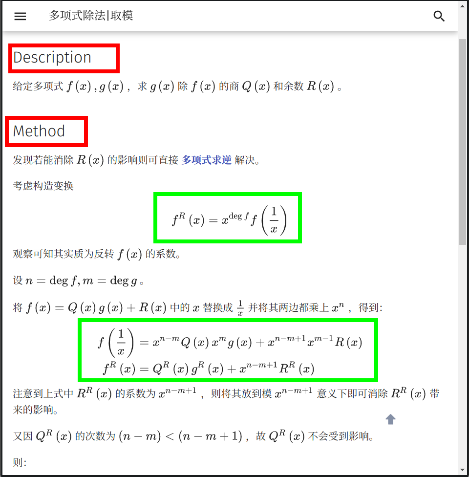
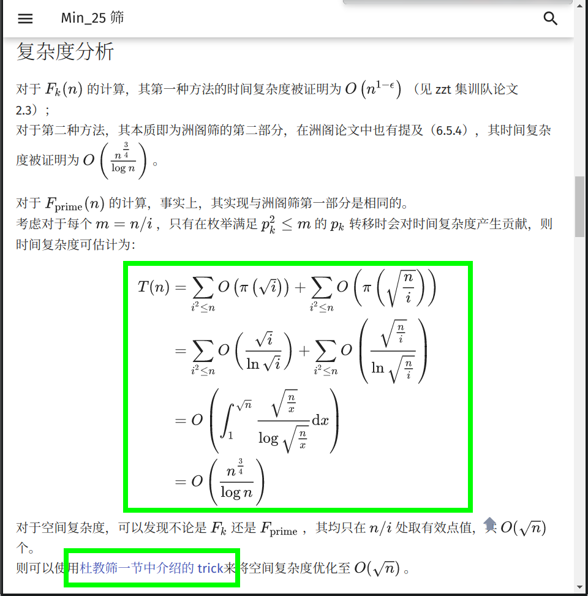
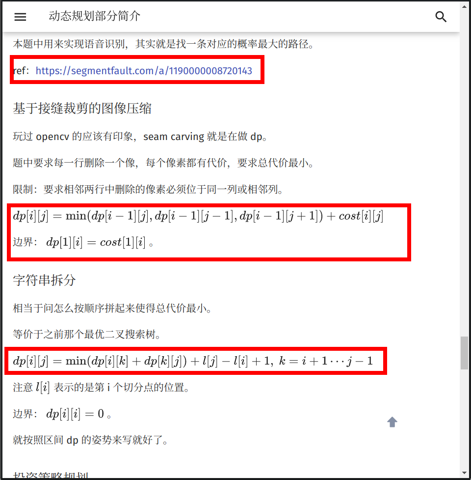
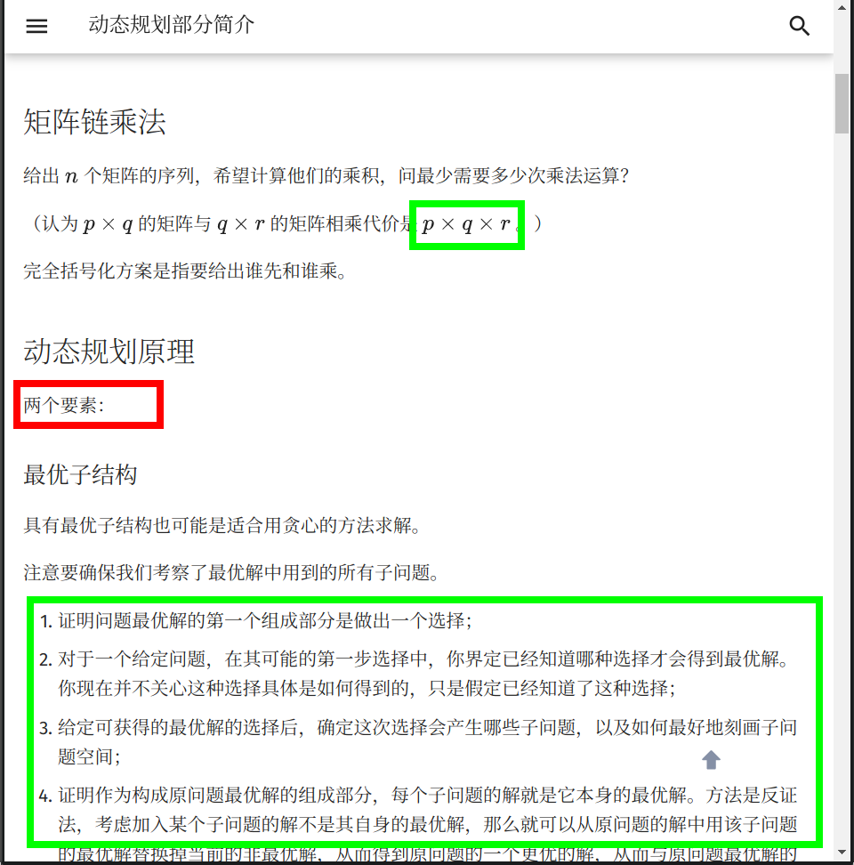
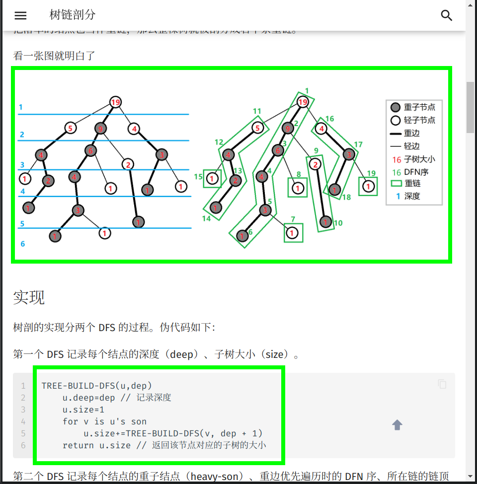
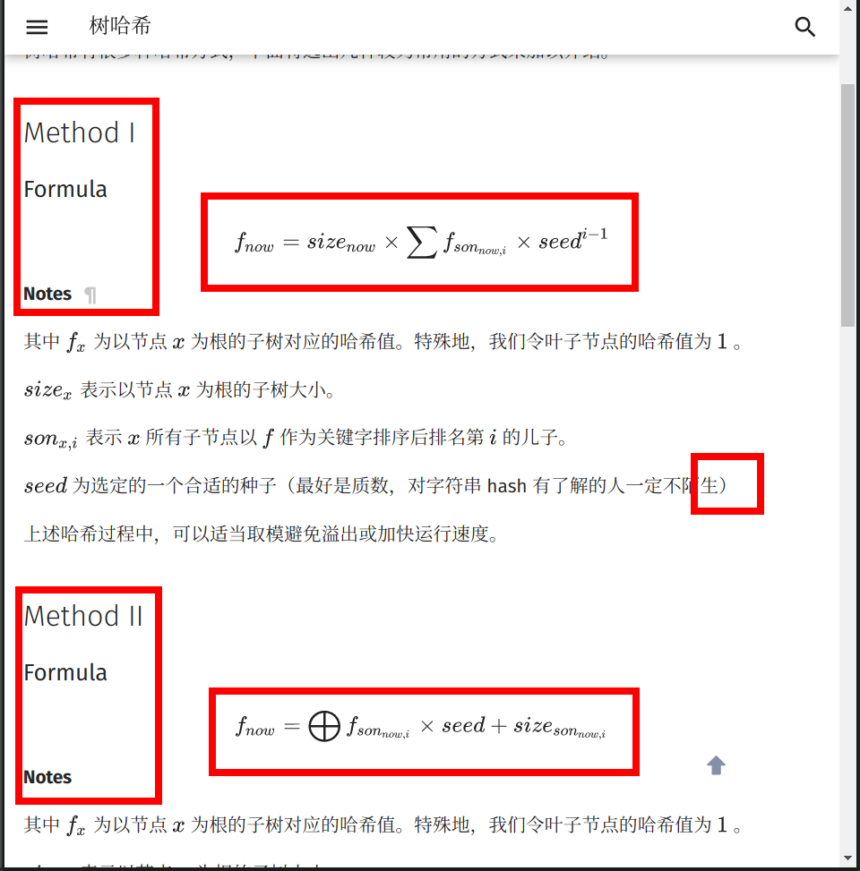
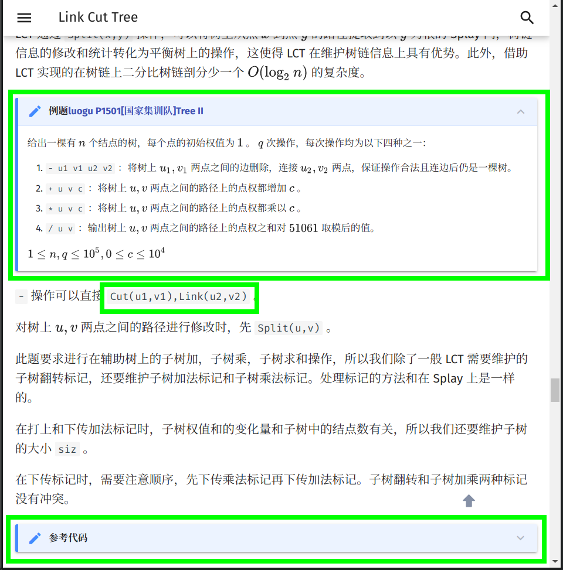
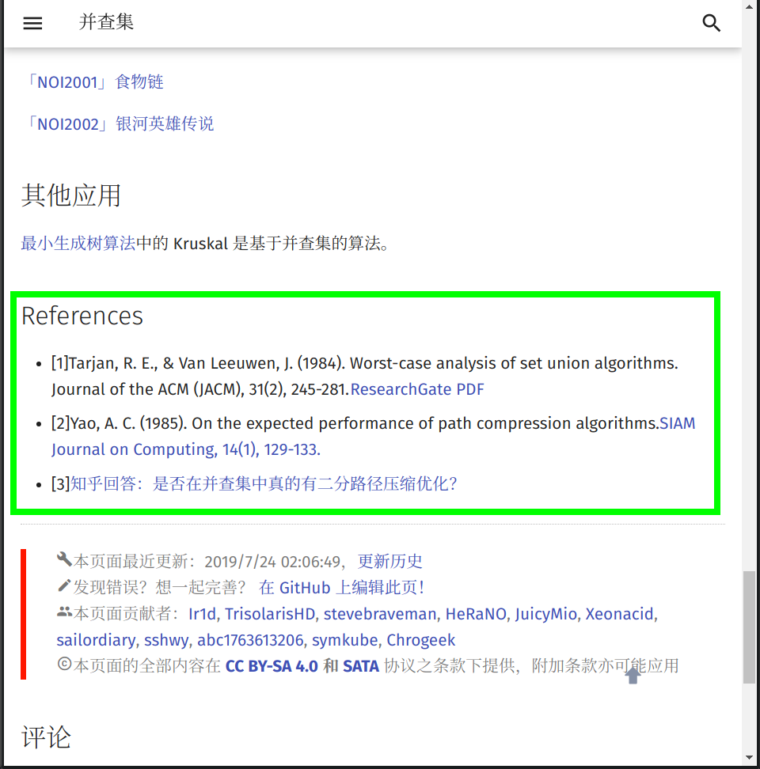

OI Wiki · prijevod · UvodOI Wiki · translation · Introduction
Priručnik za oblikovanjeStyle guide
Sadržaj
Prije početka članka, svi članovi projektnog tima OI Wiki srdačno vas pozdravljaju i pozivaju da doprinesete stranicama ovog projekta. Upravo zahvaljujući stotinama ljudi poput vas OI Wiki postao je ono što je danas!
Ova stranica navodi preporučena pravila oblikovanja i uređivačke smjernice za pisanje OI Wikija. Prije pisanja ili ispravljanja wiki stranica pažljivo pročitajte sljedeći tekst kako biste pripremili što kvalitetniji sadržaj.
Ako jedva čekate početi, preporučujemo da najprije pročitate odjeljke Ukratko i Ilustrirani primjeri.
Povijest izmjena
Napomena: bilježe se samo promjene vezane uz pisanje, recenziranje i slično, a ne ispravci oblikovanja.
| Datum | Glavni sadržaj | Poveznice na povezane issuee/pull requestove |
|---|---|---|
| 2026-02-22 | Dopunjena pravila uporabe navodnika | #6793 |
| 2026-01-07 | Propisana točka pune širine umjesto kineske kružne točke | #6746 |
| 2025-08-10 | Dodani zahtjevi oblikovanja samog priručnika; kôd: dopunjeni zahtjevi za isječke koda |
#6412 |
| 2025-08-10 | Dodani povijest izmjena i sažetak | #6409 |
| 2024-10-08 | Kôd: dopunjeni zahtjevi oblikovanja za testiranje na svim platformama | #5912, #5924 |
| 2024-03-26 | Za zadatke na OJ-ovima koristiti izvornu poveznicu umjesto zrcalne | #5482 |
| 2023-10-09 | Dodaci teme: dodani zahtjevi oblikovanja kartica8 | #5152 |
| 2023-07-23 | Za preuzimanje i instalaciju alata upućivati na službenu dokumentaciju | #5023 |
| 2023-04-15 | Dopunjena pravila uporabe navodnika | #4792 |
| 2023-03-28 | LaTeX: tablica matematičkih simbola | #4587 |
| 2023-03-02 | Dopunjena pravila interpunkcije pune i polovične širine te spojnica i crta | #4726 |
| 2022-12-13 | Dodaci teme: uklonjen zahtjev za stil sjene ugniježđenih sklopivih okvira | #4500 |
| 2022-08-09 | Pri povezivanju odjeljaka internih stranica koristiti kineske naslove | #4057 |
| 2022-06-12 | Dopunjeni zahtjevi za promjene navigacije9 | #4043 |
| 2021-09-09 | Dodaci teme: dopunjeni zahtjevi za sklopive okvire | #3517 |
| 2021-09-03 | LaTeX: \Leftrightarrow \(\to\) \iff |
#3499 |
| 2021-08-18 | Kôd: dodani zahtjevi oblikovanja koda oglednih zadataka | #3447 |
| 2021-08-12 | Slike: za animacije prednost dati APNG-u | #3422 |
| 2021-06-29 | Slike: preporučeno istodobno slanje izvornih datoteka | #3255 |
| 2021-05-29 | Kôd: uklonjen zahtjev da vitičaste zagrade ne budu u novom retku, dodani zahtjevi čitljivosti | #3197 |
| 2021-03-15 | Održavanje stranice: standardiziran način spajanja pull requestova10 | #3061 |
| 2021-02-01 | LaTeX: \lt \(\to\) <, \gt \(\to\) > |
#2950 |
| 2021-01-27 | Preporučeno spremanje vanjskih poveznica u Internet Archive | #2918 |
| 2020-09-19 | Održavanje stranice: zahtjevi za commit poruke i naslove pull requestova9 | #2744 |
| 2020-10-18 | Slike: prednost dati SVG-u | #2215 |
| 2020-08-05 | LaTeX: dodani zahtjevi oblikovanja višeslovnih varijabli | #2502 |
| 2020-07-28 | LaTeX: zabranjeno više od dva stupca u okruženju cases |
#2466 |
| 2020-07-24 | LaTeX: {n \choose m}\(\to\) \dbinom{n}{m} |
#2442 |
| 2020-07-20 | Markdown: zabranjena sintaksa precrtanog teksta | #2422 |
| 2020-07-19 | Dodaci teme: obvezno očuvanje uvlačenja praznih redaka u sklopivim okvirima11; LaTeX: dodatni zahtjevi oblikovanja matematičkih formula |
#2412 |
| 2020-07-11 | Početna verzija | #2350 |
Ukratko
Kako bismo olakšali prvo čitanje ovog dokumenta, u ovom odjeljku izdvajamo nekoliko važnih točaka priručnika:
-
Pohrana datoteka:
-
Koristite mala slova u nazivima datoteka i
-umjesto razmaka. Pogledajte SAVE-1. -
Nemojte umetati slike s vanjskih poveznica. Pogledajte SAVE-2.
-
Kad god je moguće, koristite SVG slike, i to samo standard SVG 1.1. Pogledajte SAVE-3.
-
Animacije trebaju biti u formatu SVG ili APNG. Pogledajte SAVE-4.
-
Ako slika ima izvornu datoteku, preporučuje se poslati i nju. Pogledajte SAVE-5.
-
Uz vanjsku poveznicu preporučuje se dodati poveznicu na arhiviranu snimku. Pogledajte SAVE-6.
-
Nemojte pisati interne poveznice kao vanjske. Pogledajte SAVE-7.
-
-
Interpunkcija:
-
Sintaksa Markdowna i proširenja teme:
-
Koristite samo naslove druge, treće i četvrte razine. Ne zamjenjujte podebljani tekst naslovima. Ne pišite LaTeX formule u naslovima. Pogledajte LINT-1, MDFM-1, CONT-4, CONT-9.
-
U sklopivim okvirima11 i karticama8 održavajte jednako uvlačenje, čak i na praznim redcima. Nemojte izostaviti razmake za uvlačenje praznih redaka. Pogledajte LINT-6, MDFM-6.
-
Nemojte koristiti sintaksu precrtanog teksta
~~foo~~. Pogledajte LINT-3. -
Izdvojene formule pišite ovako
$$ a^{2}=b^{2}+c^{2} $$umjesto
$$a^{2}=b^{2}+c^{2}$$. Pogledajte LINT-5. -
Koristite sklopive okvire umjesto blokova citata (Blockquotes). Pogledajte MDFM-5.
-
Za blokove koda koristite samo sintaksu
```i obvezno navedite jezik. Pogledajte LINT-7, MDFM-3.
-
-
LaTeX formule:
-
Ne smiju biti u suprotnosti s tablicom matematičkih simbola. Pogledajte MATH-1.1.
-
Pazite na uporabu fontova. Pogledajte MATH-1.2, MATH-1.15, MATH-2.6, MATH-2.7.
-
Nemojte pretjerivati s LaTeX formulama. Pogledajte MATH-1.14.
-
U LaTeX formulama nemojte koristiti zapise iz programskih jezika (primjerice \(a==b\), \(a<<1\), \(a\%b\)). Ne nižite uglate zagrade (\(a[i][j]\)). Pogledajte MATH-1.9, MATH-1.10.
-
-
Kôd:
Zahtjevi oblikovanja ovog dokumenta
- FREQ-1: pri izmjeni pravila priručnika dopunite i povijest izmjena. Ako samo ispravljate oblikovanje, to nije potrebno.
- FREQ-2: osim u odjeljku Ukratko, svako pravilo priručnika mora imati jedinstvenu oznaku koja odgovara regularnom izrazu
(?<category>[A-Z]{4})-(?<id>[1-9][0-9]*(?:\.[1-9][0-9]*)*), pri čemucategorytreba imati intuitivno značenje. Objašnjenjima nisu potrebne oznake. - FREQ-3: stavke odjeljka Ukratko moraju potjecati iz drugih odjeljaka priručnika i na kraju sadržavati poveznice na odgovarajuće oznake pravila.
- FREQ-4: jednom dodijeljene oznake pravila ne treba mijenjati. Ako je promjena nužna (primjerice pri brisanju ili spajanju pravila), označite je tekstom poput „Ukinuto” ili „Premješteno u XXXX-id”.
Zahtjevi za doprinos dokumentaciji
Kada namjeravate doprinijeti sadržaju, upoznajte se koliko je moguće sa sljedećim trima područjima:
- oblik pohrane dokumenata
- smislenost dokumenata
- zahtjevi oblikovanja remark-linta i \(\rm{\LaTeX}\) formula
Oblik poveznica i pohrane dokumenata
-
SAVE-1: nazivi datoteka moraju biti malim slovima, a riječi odvojene znakom
-. Primjer:file-name.md. -
SAVE-2: sve vanjske slike koje dokument koristi pohranite u odgovarajuću mapu
imagesunutar ovog repozitorija (kako biste izbjegli zaštitu od izravnog povezivanja na nekim stranicama). Preporučuje se oblik nazivanaziv MD dokumenta + broj(pogledajte slike u postojećim dokumentima). Primjerice, naziv datoteke ovog dokumenta je format, pa se prva slika u njemu zoveformat1.png. -
SAVE-3: preporučuje se format SVG1 radi bolje oštrine i skaliranja. Budući da komponente OI Wikija različito podržavaju SVG standarde, slike trebaju slijediti standard SVG 1.1.
-
SAVE-4: ako animaciju ne možete ili ne znate izraditi u SVG-u, preporučuje se APNG2. Korisnici Windowsa mogu snimati alatom ScreenToGif, a korisnici Linuxa alatom Peek; u postavkama odaberite APNG. U ostalim slučajevima preporučuje se prvo izraditi video, primjerice MP4, i pretvoriti ga u APNG. U ffmpegu to možete učiniti naredbom
ffmpeg -i filename.mp4 -f apng filename.apng -plays 0.3 -
SAVE-5: ako slika ima i izvornu datoteku i izvezeni prikaz (primjerice JPG i PSD ili SVG i izvorni TikZ TeX kôd), preporučuje se spremiti izvornu datoteku u isti direktorij s istim osnovnim nazivom kao slika.
-
SAVE-6: provjerite trajnost poveznica u dokumentu. Ne preporučuje se povezivanje resursa s vlastitih servisa (primjerice zadataka s vlastitog OJ-a). Pri dodavanju vanjske poveznice preporučuje se pohraniti je i u Internet Archive4 kako nezamjenjive poveznice ne bi postale nedostupne.
-
SAVE-7: u internim poveznicama izostavite domenu i relativnom putanjom povežite odgovarajuću
.mddatoteku. Primjerice, na ovoj stranici (intro/format) uvod u razne teme (misc) povezuje se zapisom[Uvod u razne teme](../misc/index.md). Dodavanjem fragmenta možete povezati određeni odjeljak, primjerice[Pravila oblikovanja pull requestova](./htc.md#pravila-oblikovanja-pull-requestova). Vrijednost fragmenta možete dobiti gumbom desno od svakog naslova ili iz poveznica u sadržaju na desnoj strani web-stranice.
Smislenost dokumenata
Smislenost znači da napisani sadržaj mora imati sljedeća svojstva:
- STRC-1: od jednostavnoga prema složenome; težina sadržaja treba postupno rasti.
-
STRC-2: logičnost.
-
STRC-2.1: tekstovi o algoritmima ili matematičkim pojmovima trebaju, koliko je moguće, sadržavati:
- načelo: objasnite pripadajuće načelo;
- primjere: dajte 1 ~ 2 tipična primjera;
- zadatke: pod tim naslovom navedite samo nazive zadataka i poveznice na njih. Za algoritamske zadatke prioritet OJ-ova je: izvorni OJ (strani OJ mora biti lako dostupan iz Kine) > UOJ > LOJ > Luogu.
Primjer stranice: IDA*
-
STRC-2.2: tekstovi o alatima trebaju, koliko je moguće, sadržavati:
- uvod: objasnite pozadinu i namjenu alata.
- postavljanje: detaljno opišite postavljanje okruženja i uporabu. Za preuzimanje i instalaciju po mogućnosti uputite na službenu dokumentaciju.
Primjer stranice: WSL (Windows 10)
-
Osim kada je postojeći sadržaj loše kvalitete, preporučuje se doprinijeti dopunjavanjem, a ne izravnim prepisivanjem preko postojećeg sadržaja. Ako niste sigurni, pogledajte odjeljak Načini komunikacije o projektu i obratite se timu OI Wikija.
Osnovni zahtjevi oblikovanja dokumenata
Zahtjevi oblikovanja remark-linta
remark-lint može automatski ujednačiti stil datoteka u projektu. Trenutačna konfiguracija OI Wikija nalazi se u .remarkrc.
Pri postavljanju konfiguracije tim OI Wikija naišao je i na probleme koje remark-lint ne obrađuje dobro. Stoga pri uređivanju dokumenata strogo slijedite ove zahtjeve:
-
LINT-1: nemojte koristiti naslove prve razine, poput
<h1>ili# Naslov. -
LINT-2: nakon oznake naslova stavite jedan obični razmak, primjerice
## Uvod. -
LINT-3: nemojte koristiti sintaksu precrtanog teksta jer je remark-lint ne obrađuje dobro (drugi je razlog što su precrtani dijelovi uglavnom dosjetke koje čitatelju ne pomažu razumjeti sadržaj i ne zadovoljavaju zahtjeve izražavanja iz odjeljka „Zahtjevi oblikovanja tekstualnog sadržaja” u nastavku).
-
LINT-4: popisi:
- LINT-4.1: prije popisa ostavite prazan redak i započnite novi odlomak.
- LINT-4.2: u numeriranim popisima (primjerice
1. Primjer) nakon točke stavite razmak.
-
LINT-5: prije i poslije izdvojene formule ostavite po jedan prazan redak; inače će se tumačiti kao formula unutar retka.
-
LINT-6: pri uporabi sintakse Details koja počinje s
???ili!!!, svaki redak koji pripada okviru mora počinjati s najmanje 4 razmaka.Čak i prazni redci moraju imati jednako uvlačenje kao ostali. Nemojte uključivati automatsko uklanjanje završnih razmaka u uređivaču.
Primjer
U sljedećem kodu
␣predstavlja razmak.???+ warning ␣␣␣␣Ne zaboravite dodati 4 razmaka ispred teksta. Ostala je sintaksa jednaka Markdownovoj. ␣␣␣␣ ␣␣␣␣Bez 4 razmaka tekst se neće pojaviti unutar okvira Details. ␣␣␣␣ ␣␣␣␣Što znači `???` objašnjeno je [u nastavku](#MDFM-5).Upozorenje
Ne zaboravite dodati 4 razmaka ispred teksta. Ostala je sintaksa jednaka Markdownovoj.
Bez 4 razmaka tekst se neće pojaviti unutar okvira Details.
Što znači
???objašnjeno je u nastavku. -
LINT-7: za blok običnog teksta oblikovan kao kôd koristite
```text. Ako koristite samo```bez navođenja jezika, sadržaj može biti pogrešno uvučen.
Uporaba interpunkcije
- PUNC-1: svaku rečenicu završite točkom.
- PUNC-2: pravilno koristite interpunkciju pune širine i polovične širine. U kineskom koristite punu širinu, a u engleskom polovičnu. Pri miješanju kineskog i engleskog pogledajte Uređivačka pravila za engleski tekst u kineskim publikacijama. Posebno, koristite točku pune širine „．” umjesto kineske kružne točke „。”.
- PUNC-3: budući da
“……”i‘……’ne razlikuju punu i polovičnu širinu, koristite「……」za dvostruke navodnike pune širine,"..."za dvostruke navodnike polovične širine,『……』za jednostruke navodnike pune širine, a'...'za jednostruke navodnike polovične širine.
- PUNC-4: razlikujte kineski zarez za nabrajanje i obični zarez.
- PUNC-5: pazite na položaj zagrada. Zagrade unutar rečenice i one koje obuhvaćaju cijelu rečenicu stoje na različitim mjestima.
- PUNC-6: za odnos složenih rečenica u popisu obično koristite točku sa zarezom.
- PUNC-7: u numeriranom popisu preporučuje se svaku stavku završiti točkom sa zarezom, a posljednju točkom; u nenumeriranom popisu preporučuje se svaku stavku završiti točkom.
-
PUNC-8: razlikujte spojnicu (hyphen, obično zamijenjenu znakom U+002D hyphen-minus (-), odnosno „minusom” na tipkovnici), kratku crtu U+2013 en dash (–) i dugu crtu U+2014 em dash (—). (Pri povezivanju više osobnih imena u engleskom treba koristiti en dash, iako se vrlo često pogrešno koristi spojnica. Druge su pogreške rjeđe, pa je najvažnije zapamtiti ovo pravilo.) Pogledajte Crtu na Wikipediji.
Primjer
- 中学生学科竞赛主要包括信息学奥林匹克竞赛、信息学奥林匹克竞赛、信息学奥林匹克竞赛、信息学奥林匹克竞赛和信息学奥林匹克竞赛（谁写的这个示例，建议抬走）． (Predmetna natjecanja za srednjoškolce uglavnom uključuju informatičku olimpijadu, informatičku olimpijadu, informatičku olimpijadu, informatičku olimpijadu i informatičku olimpijadu (tko god je napisao ovaj primjer, neka ga odvedu).)
- 「你吃了吗？」李四问张三． („Jesi li jeo?” upitao je Li Si Zhanga Sana.)
- 我想对你说：「我真是太喜欢你了．」 (Želim ti reći: „Zaista mi se jako sviđaš.”)
- 「苟利国家生死以，岂因祸福避趋之！」 („Ako to koristi zemlji, dat ću i život; zar da biram prema vlastitoj sreći ili nesreći!”)
- 张华考上了大学；李萍进了技校；我当了工人：我们都有美好的前途．12 (Zhang Hua upisao je fakultet; Li Ping krenula je u strukovnu školu; ja sam postao radnik: svi imamo svijetlu budućnost.)
- 以下是这个算法的基本流程： (Osnovni je postupak algoritma sljedeći:)
- 初始化到各点的距离为无穷大，将所有点设置为未被访问过，初始化一个队列； (postavite udaljenosti do svih vrhova na beskonačno, označite sve vrhove neposjećenima i inicijalizirajte red;)
- 将起点放入队列，将起点设置为已被访问过，更新到起点的距离为 \(0\)； (dodajte početni vrh u red, označite ga posjećenim i postavite njegovu udaljenost na 0;)
- 取出队首元素，将该元素设置为未被访问过； (izvadite prvi element reda i označite ga neposjećenim;)
- 遍历所有与此元素相连的边，若到这个点存在更短的距离，则进行松弛操作； (prođite svim bridovima povezanima s tim elementom i provedite relaksaciju ako postoji kraći put do vrha;)
- 若这个点未被访问过，则将这个点放入队列，且设置这个点为已经访问过； (ako vrh nije posjećen, dodajte ga u red i označite posjećenim;)
- 回到第三步，直到队列为空． (vratite se na treći korak dok red ne bude prazan.)
- KMP 算法（Knuth–Morris–Pratt algorithm, KMP algorithm）由 Knuth、Pratt 和 Morris 在 1977 年共同发布．13 (KMP algoritam (Knuth–Morris–Pratt algorithm, KMP algorithm) zajednički su objavili Knuth, Pratt i Morris 1977. godine.)
Zahtjevi oblikovanja Markdowna i proširenja teme
-
MDFM-1: za isticanje koristite
**SOMETHING**i navodnike, a ne naslove bilo koje razine, jer naslovi narušavaju hijerarhiju članka i/ili uzrokuju probleme sa sadržajem. -
MDFM-2: pri povezivanju zadataka, kad god je moguće, koristite poveznicu na izvorni OJ umjesto zrcalne poveznice.
-
MDFM-3: pravilno koristite Markdownove blokove. Kôd unutar retka omeđite parom obrnutih apostrofa, a izdvojeni kôd parom oznaka
```. Obrnuti apostrof je znak ispod tilde u gornjem lijevom dijelu tipkovnice. Za izdvojeni kôd nakon prvog```navedite jezik (primjerice```cpp).Primjer
```cpp // #include<stdio.h> //Loš način #include <cstdio> //Dobar način ```// #include<stdio.h> //Loš način #include <cstdio> //Dobar način -
MDFM-4: odjeljak „Literatura i napomene” pišite Markdownovim fusnotama. Oblik je:
Tekst.[^naziv-fusnote] [^naziv-fusnote]: Sadržaj izvora. Napomena: koristite običnu dvotočku, iza koje slijedi razmak.Nazivi fusnota mogu biti brojevi ili tekst. Položaj oznake fusnote slijedi pravila za zagrade. Radi urednosti koristite isti obrazac naziva na cijeloj stranici, primjerice ref1, ref2, note1…
Sadržaj svih fusnota stavite pod naslov druge razine
## Literatura i napomene.Primjer
Kada `#include <cxxxx>` može zamijeniti `#include <xxxx.h>`, koristite prvi oblik.[^ref1] CCF je 21. siječnja 2020. objavio povratak NOIP-a.[^ref2] ## Literatura i napomene [^ref1]: [cstdio stdio.h namespace](https://stackoverflow.com/questions/10460250/cstdio-stdio-h-namespace) [^ref2]: [CCF-ova obavijest o povratku natjecanja NOIP - China Computer Federation](https://www.ccf.org.cn/c/2020-01-21/694716.shtml)Kada
#include <cxxxx>može zamijeniti#include <xxxx.h>, koristite prvi oblik.6CCF je 21. siječnja 2020. objavio povratak NOIP-a.7
-
MDFM-5: za tekstove zadataka i referentni kôd preporučuje se proširena sintaksa teme
???+note(odnosno Collapsible Blocks). Možete je koristiti i za druge dodatne sadržaje koje treba predstaviti.Primjer koda (u nastavku
␣predstavlja razmak):??? note "Naslov" ␣␣␣␣Ovaj je okvir zadano sklopljen. ␣␣␣␣ ␣␣␣␣Preporučuje se staviti **kôd rješenja** u sklopivi okvir. ???+note "[HDOJ-ov zadatak „A + B Problem”](https://acm.hdu.edu.cn/showproblem.php?pid=1000)" ␣␣␣␣Naslov može sadržavati Markdown poveznicu. Ovdje poveznica vodi na HDOJ-ov zadatak „A + B Problem”. ␣␣␣␣ ␣␣␣␣Preporučuje se tako **navesti poveznicu na izvorni zadatak**. ␣␣␣␣ ␣␣␣␣Pazite na položaj dvostrukih navodnika.Prikaz:
Naslov
Ovaj je okvir zadano sklopljen.
Preporučuje se staviti kôd rješenja u sklopivi okvir.
HDOJ-ov zadatak „A + B Problem”
Naslov može sadržavati Markdown poveznicu. Ovdje poveznica vodi na HDOJ-ov zadatak „A + B Problem”.
Preporučuje se tako navesti poveznicu na izvorni zadatak.
Pazite na položaj dvostrukih navodnika.
Razlika je u tome što je okvir s
+zadano otvoren, a okvir bez+zadano sklopljen.Naslov sklopivog okvira, odnosno sadržaj iza
noteu???+note, treba omeđiti znakovima". U njemu je podržana Markdown sintaksa. Pogledajte Admonition - Changing the title. (Okviri bez mogućnosti sklapanja obični su Admonitions; pogledajte Admonitions - Material for MkDocs.) -
MDFM-6: za kôd u više programskih jezika preporučuju se kartice sadržaja (Content tabs), koje omogućuju prebacivanje između jezika. Kartice imaju i druge namjene; pogledajte Content tabs. Njihova uporaba i prikaz navedeni su ispod.
Primjer
Ispred teksta dodajte 4 razmaka (u nastavku prikazana kao
␣). Ostala je sintaksa jednaka Markdownovoj.=== "C" ␣␣␣␣```c ␣␣␣␣#include <stdio.h> ␣␣␣␣ ␣␣␣␣int main(void) { ␣␣␣␣ printf("Hello world!\n"); ␣␣␣␣ return 0; ␣␣␣␣} ␣␣␣␣``` === "C++" ␣␣␣␣```cpp ␣␣␣␣#include <iostream> ␣␣␣␣ ␣␣␣␣int main(void) { ␣␣␣␣ std::cout << "Hello world!" << std::endl; ␣␣␣␣ return 0; ␣␣␣␣} ␣␣␣␣```#include <stdio.h> int main(void) { printf("Hello world!\n"); return 0; }#include <iostream> int main(void) { std::cout << "Hello world!" << std::endl; return 0; }
Ako imate dodatnih pitanja o mkdocs-materialu (temi koju koristimo), pogledajte Upute za MkDocs, gdje je objašnjena uporaba dodataka te teme.
Zahtjevi oblikovanja tekstualnog sadržaja
-
CONT-1: svako pojavljivanje naziva OI Wiki treba biti podebljano.
-
CONT-2: na početku stranice napišite kratak tekst koji sažima njezin sadržaj (primjerice „Ova stranica predstavlja…”).
Primjer
Ova stranica navodi preporučena pravila oblikovanja i uređivačke smjernice za pisanje OI Wikija.
-
CONT-3: ako stranica zahtijeva predznanje, na početak, prije sažetka sadržaja, dodajte redak Predznanje: …. Oblik je:
Predznanje: [Interna stranica 1](url1), [Interna stranica 2](url2) i [Interna stranica 3](url3) -
CONT-4: pazite na strukturu dokumenta. Mora biti uredna i imati jasnu hijerarhiju. Nemojte ponovno koristiti „naslove pete razine”; običnom članku nije potrebna toliko složena struktura.
-
CONT-5: pazite na izražavanje. Kao enciklopedijska stranica, OI Wiki treba koristiti formalan i objektivan jezik. Dosjetke i drugi sadržaji koji čitatelju ne pomažu razumjeti temu ne pripadaju OI Wikiju.
-
CONT-6: poveznicama dajte potpune naslove ili prepoznatljive opise. Izbjegavajte gole adrese i nejasne opise poput „ovo” ili „ovdje”. Svaku poveznicu opišite što jasnije kako bi čitatelji znali kamo vodi.
Preporučuje se naslov izvornog članka ili kartice preglednika.
Nepreporučeni oblik
Pogledajte [ovu stranicu](https://docs.github.com/en/github/collaborating-with-issues-and-pull-requests/syncing-a-fork) Pogledajte <https://docs.github.com/en/github/collaborating-with-issues-and-pull-requests/syncing-a-fork>Pogledajte ovu stranicu
Pogledajte https://docs.github.com/en/github/collaborating-with-issues-and-pull-requests/syncing-a-fork
Preporučeni oblik
Pogledajte službenu GitHubovu stranicu pomoći [Syncing a fork - GitHub Docs](https://docs.github.com/en/github/collaborating-with-issues-and-pull-requests/syncing-a-fork)Pogledajte službenu GitHubovu stranicu pomoći Syncing a fork - GitHub Docs
-
CONT-7: zbog ograničenja Markdowna naslov druge razine
## Literatura i napomenemora biti na kraju dokumenta. -
CONT-8: redne brojeve preporučuje se pisati kineskim riječima. Primjeri:
- Prvi član niza.
- Prvi redak ulazne datoteke.
-
CONT-9: izbjegavajte MathJax formule u naslovima bilo koje razine jer mogu uzrokovati pogrešan prikaz sadržaja.5
-
CONT-10: pazite na čitljivost koda.
- CONT-10.1.1: kôd treba imati jasnu logiku i biti što jednostavniji i razumljiviji. Nemojte ga pretjerano zbijati u retke ni dodavati previše nepovezanog koda. Izbjegavajte sadržaje koji nisu povezani s idejom algoritma.
- CONT-10.1.2: preporučuje se dodati prikladne komentare u referentni kôd radi lakšeg razumijevanja.
Za jezike poput C-a i C++-a:
-
CONT-10.2.1: izbjegavajte pretprocesorske direktive i makronaredbe koje otežavaju čitanje.
-
CONT-10.2.2: nemojte koristiti
0umjestofalse/NULL/nullptri sličnoga, ni1umjestotruei sličnoga. -
CONT-10.2.3: pri deklariranju aliasa tipa preporučuje se
using, a netypedef. -
CONT-10.2.4: ne preporučuje se definirati konstante makronaredbama; izravno koristite ključne riječi poput
constexpr/const. -
CONT-10.2.5: za funkcije se ne preporučuje ključna riječ
inline; pogledajte Optimizacije prevoditelja. -
CONT-10.2.6: izbjegavajte složene tehnike metaprogramiranja predlošcima poput type traitsa i djelomične specijalizacije. Ako su nužne, objasnite ih komentarima.
Nepreporučeni oblik
template < typename U, typename V, enable_if_t<is_integral<U>::value && is_integral<V>::value && (is_unsigned<U>::value && is_unsigned<V>::value)>* = nullptr> typename common_type<U, V>::type gcd(U x, V y) { return y == 0 ? x : gcd(y, x % y); } template <typename U, typename V, enable_if_t<is_integral<U>::value && is_integral<V>::value && (is_signed<U>::value || is_signed<V>::value)>* = nullptr> auto gcd(U x, V y) { return gcd((typename make_unsigned<U>::type)(abs(x)), (typename make_unsigned<V>::type)(abs(y))); } template <typename U, typename V, typename... Args, enable_if_t<is_integral<U>::value && is_integral<V>::value && 0 < sizeof...(Args)>* = nullptr> auto gcd(U x, V y, Args... args) { return gcd(gcd(x, y), args...); } template <class T, decltype(declval<T>().begin(), declval<T>().end(), 0)* = nullptr> auto gcd(const T& container) { auto ans = (typename make_unsigned<typename T::value_type>::type)( *container.begin()); for (auto it = container.begin(); it != container.end(); ++it) ans = gcd(ans, *it); return ans; }Ovaj kôd daje složenu implementaciju izračuna najvećega zajedničkog djelitelja, u kojoj:
- prvi
gcdprima dva cijela broja bez predznakax,yi vraća njihov najveći zajednički djelitelj; raspon povratnog tipa sigurno obuhvaća ixiy. - Drugi
gcdprima dva cijela brojax,y, od kojih je barem jedan s predznakom, i vraća njihov najveći zajednički djelitelj. - Treći
gcdprima više od dva cijela broja i vraća njihov najveći zajednički djelitelj. - Četvrti
gcdprima spremnik i vraća najveći zajednički djelitelj svih brojeva u njemu.
Na OI Wikiju zanima nas samo ideja algoritma za najveći zajednički djelitelj. Ovaj kôd sadrži previše nepovezanih i složenih tehničkih pojedinosti te ga treba izbjegavati.
Preporučeni oblik
int gcd(int x, int y) { return y == 0 ? x : gcd(y, x % y); }„Dodavanje provjere tipova”, „obrada negativnog ulaza” i „podrška funkcije za više argumenata” više su inženjerske teme; naš naglasak uvijek treba biti na ideji algoritma.
- prvi
Zahtjevi oblikovanja LaTeX formula
LaTeX je prvi izbor za slaganje formula i treba ga pravilno koristiti. Stoga imamo stroge zahtjeve za njegovu uporabu. Za brz početak možete pročitati tablicu na kraju ovog odjeljka.
-
MATH-1.1: simboli koje koristite ne smiju biti u suprotnosti s tablicom matematičkih simbola.
-
MATH-1.2: koristite uspravni slog (Roman) za brojeve, konstante, operatore i funkcije, a kurziv (Italic) za varijable i indekse. LaTeX već definira neke česte konstante, funkcije, operatore i slično, koje možemo izravno koristiti, uključujući, ali ne ograničavajući se na:
\log, \ln, \lg, \sin, \cos, \tan, \sec, \csc, \cot, \gcd, \min, \max, \exp, \inf, \mod, \bmod, \pmodZato pri unosu konstanti, naziva funkcija, operatora i sličnoga prvo provjerite treba li koristiti uspravni slog ili neki drugi font. Za zapis LaTeX simbola pogledajte KaTeXovu stranicu Supported Functions (nije potpun popis) ili potražite odgovor pretragom.
Budući da je u LaTeXu teško dobiti uspravna mala grčka slova, konstante, operatori i funkcije s takvim slovima mogu biti u kurzivu, primjerice \(\pi\) te \(\delta x\) s oznakom \(\delta\).
Za naziv funkcije koji nije unaprijed definiran, a treba biti uspravan, koristite
$\operatorname{something}$; primjerice$\operatorname{lcm}$daje uspravnu oznaku (funkcije) najmanjega zajedničkog višekratnika. Slično, za uspravne konstante koristite$\mathrm{}$, za podebljane uspravne simbole$\mathbf{}$, a za podebljane simbole u kurzivu$\boldsymbol{}$(primjerice vektor \(\boldsymbol{a}\)). Za višeslovne varijable koristite$\textit{}$. Sav ostali nematematički sadržaj, uključujući engleski tekst i posebne znakove, pišite s$\text{}$. Kineski tekst preporučujemo ne stavljati u LaTeX formule. -
MATH-1.3: ako izraz treba prelomiti u više redaka (često kod dugih izdvojenih formula), slijedite ova pravila:
-
MATH-1.3.1: prijelom retka stavite prije \(=\), \(+\), \(-\), \(\pm\), \(\mp\), a po potrebi i prije \(\times\), \(\cdot\), \(/\), primjerice:
\[ \begin{aligned} \mathrm{e}^x &= \sum\limits_{n=0}^{\infty} \frac{x^n}{n!} \\ &= \phantom{+} 1 + x + \frac{x^2}{2} \\ & \phantom{=} + \frac{x^3}{6} + \frac{x^4}{24} + \dots \\ \end{aligned} \] -
MATH-1.3.2: isti se operator ne smije pojaviti i prije i poslije prijeloma retka,
-
MATH-1.3.3: izbjegavajte prijelome retka unutar izraza u zagradama.
-
-
MATH-1.4: za razlomke unutar retka koristite
$\dfrac{}{}$. Primjerice,$\dfrac{1}{2}$daje \(\dfrac{1}{2}\), umjesto$\frac{1}{2}$, što daje \(\frac{1}{2}\). -
MATH-1.5: za binomne koeficijente koristite
\dbinom{n}{m}, što daje \(\dbinom{n}{m}\), umjesto{n \choose m}(taj se oblik u LaTeXu više ne preporučuje). Kao kod prethodnog pravila o razlomcima, nemojte koristiti\binom{n}{m}, što daje \(\binom{n}{m}\). -
MATH-1.6: izbjegavajte velike operatore unutar retka (poput \(\sum\), \(\prod\), \(\int\)).
-
MATH-1.7: kada nema dvosmislenosti, umjesto zvjezdice koristite
$\times$; za vektorski produkt koristite$\times$, a za skalarni$\cdot$. Primjerice \(a\times b\), \(a\cdot b\), a ne \(a\ast b\). -
MATH-1.8: umjesto
$...$koristite$\cdots$(na srednjoj visini),$\ldots$(na osnovnoj crti) ili$\vdots$(okomita trotočka). Primjerice \(a_1,a_2,\cdots a_n\), a ne \(a_1,a_2,... a_n\). -
MATH-1.9: izvan koda nemojte koristiti zapise programskih jezika, nego LaTeX formule. Primjerice, koristite
$=$, a ne$==$(\(a=b\), a ne \(a==b\));`a<<1`ili$a\times 2$, a ne$a<<1$;$a\bmod b$, a ne$a\%b$(\(a\bmod b\), a ne \(a\%b\)). -
MATH-1.10: u formulama nemojte nizati uglate zagrade (zapis višedimenzionalnih polja u C++-u), nego koristite indekse: \(a_{i,j,k}\), a ne \(a[i][j][k]\). Za složenije indekse preporučuje se viševarijabilna funkcija (\(f(i,j,k)\)) ili zapis koda unutar retka. Za jednostavne funkcije jedne varijable prihvatljivi su
$f_i$,$f(i)$i$f[i]$. -
MATH-1.11: radi dosljednosti i jednostavnijeg pisanja, u analizi složenosti veliko \(O\) pišite kao
$O()$, a ne$\mathcal O()$. -
MATH-1.12: za ekvivalenciju koristite
$\iff$, što daje \(\iff\), a ne$\Leftrightarrow$, što daje \(\Leftrightarrow\). -
MATH-1.13: okruženje
casesza funkcije zadane po dijelovima smije imati samo dva stupca (jedan razdjelnik&). -
MATH-1.14: nemojte pretjerivati s LaTeX formulama. Time se stranica sporije učitava (MathJax je poznat po neučinkovitosti), a raspored može postati neuredan. LaTeX matematički font obično koristimo za nazive varijabli. Preporučujemo izbjegavati nepotrebno učestalo miješanje formula i običnog teksta te formule koje nisu nužne. Primjerice:
我们将要学习 $Network-flow$ 中的 $SPFA$ 最小费用流，需要使用 $Edmonds–Karp$ 算法进行增广．To je tipičan primjer zlouporabe matematičkog fonta. (Za kurziv na stranici koristite
*tekst*.) (Učit ćemo SPFA za tok najmanje cijene iz područja Network-flow, koristeći algoritam Edmonds–Karp za povećavanje toka.) -
MATH-1.15: koristite odgovarajuće LaTeX simbole, osobito grčka slova i druge posebne simbole u formulama. Primjerice, za Eulerovu funkciju koristite
$\varphi$, za promjer kružnice$\Phi$, a za zlatni rez$\phi$. Iako svi označavaju grčko slovo fi, imaju različita značenja u različitim kontekstima. Nemojte ih umetati funkcijom za posebne znakove svog načina unosa.Zbog povijesnih razloga u LaTeXu, prazni skup označava se s
$\varnothing$, a ne$\emptyset$; ostale simbole pišite prema tablici matematičkih simbola.
Prethodna pravila možemo sažeti tablicom. Ona ne prikazuje uporabu svih simbola, nego samo česte pogreške. Na slične situacije primijenite ista načela.
| Neispravan zapis | Prikaz | Ispravan zapis | Prikaz |
|---|---|---|---|
$log, ln, lg$ |
\(log, ln, lg\) | $\log$, $\ln$, $\lg$ |
\(\log\), \(\ln\), \(\lg\) |
$sin, cos, tan$ |
\(sin, cos, tan\) | $\sin$, $\cos$, $\tan$ |
\(\sin\), \(\cos\), \(\tan\) |
$gcd, lcm$ |
\(gcd, lcm\) | $\gcd$, $\operatorname{lcm}$ |
\(\gcd\), \(\operatorname{lcm}\) |
$e$, $\text{e}$, e (baza prirodnog logaritma) |
\(e\), \(\text{e}\), e | $\mathrm{e}$ |
\(\mathrm{e}\) |
$i$, $\text{i}$, i (imaginarna jedinica) |
\(i\), \(\text{i}\), i | $\mathrm{i}$ |
\(\mathrm{i}\) |
$ 小于 a 的质数 $ |
\(小于 a 的质数\) | 小于 $a$ 的质数 |
小于 \(a\) 的质数 (prosti brojevi manji od a) |
$...$ |
\(...\) | $\cdots$, $\ldots$, $\vdots$, $\ddots$ |
\(\cdots\), \(\ldots\), \(\vdots\), \(\ddots\) |
$a*b$ (množenje dvaju brojeva) |
\(a*b\) | $a\times b$, $a\cdot b$ |
\(a\times b\), \(a\cdot b\) |
$SPFA$ (engleski naziv) |
\(SPFA\) | SPFA |
SPFA |
$a==b$ |
\(a==b\) | $a=b$ |
\(a=b\) |
$f[i][j][k]$ |
\(f[i][j][k]\) | $f_{i,j,k}$, $f(i,j,k)$ |
\(f_{i,j,k}\), \(f(i,j,k)\) |
$R,N^*$ (skupovi) |
\(R,N^*\) | $\mathbf{R}$, $\mathbf{N}^*$ |
\(\mathbf{R}\), \(\mathbf{N}^*\) |
$\emptyset$ |
\(\emptyset\) | $\varnothing$ |
\(\varnothing\) |
$size$ |
\(size\) | $\textit{size}$ |
\(\textit{size}\) |
Dodatni zahtjevi oblikovanja matematičkih formula
Iako je navedena sintaksa formula vrlo slična pravom LaTeX sustavu za slaganje teksta, MathJax i LaTeX dva su potpuno nepovezana sustava. MathJax koristi samo dio sintakse vrlo slične LaTeXu. U detaljima postoje brojne razlike zbog kojih formule često nisu prenosive između njih.
Budući da je OI Wiki razvio alat za izvoz PDF-a s LaTeXovim mehanizmom slaganja, važno je naglasiti kompatibilnost formula između MathJaxa i LaTeXa. Pri pisanju matematičkih formula na wikiju obratite pozornost na sljedeće.
Ova su pravila već što više prilagođena MathJaxu. Alat za izvoz podržava i neke zapise koji su izvorno ispravno radili samo u MathJaxu.
-
MATH-2.1: za višeredne poravnate formule koristite
\begin{aligned} ... \end{aligned}; -
MATH-2.2: ako te formule trebaju biti numerirane, koristite okruženje
aligniliequation; -
MATH-2.3: nemojte koristiti okruženja
splitieqnarray; -
MATH-2.4: za znakove manje i veće nemojte koristiti
\lt,\gt, nego izravno<,>; -
MATH-2.5: nemojte izravno koristiti
\\za novi redak (formule koje treba prelomiti stavite ualignedili drugo višeredno okruženje); -
MATH-2.6: za LaTeXov logotip \(\rm{\LaTeX}\) koristite
$\rm{\LaTeX}$, a nemathrm; (\LaTeXu TeXu nije dopušten u matematičkom načinu, dok\mathrmnije dopušten u običnom načinu; premda\textispravno radi u TeXu, MathJax argument naredbe\textispisuje doslovno umjesto da obradi naredbe); -
MATH-2.7: kineski tekst u matematičkim formulama mora biti unutar naredbe
\text{}, dok varijable, brojevi, operatori i nazivi funkcija moraju biti izvan nje. Nemojte ugnježđivati matematičke formule u\text{}; -
MATH-2.8: u okruženju
arraybroj stvarnih stupaca mora odgovarati broju oznaka poravnanja. Primjerice, u sljedećoj formuli podaci imaju 3 stupca (&je razdjelnik stupaca), pa trebaju 3 oznake poravnanja (l/r/cznače lijevo/desno/središnje poravnanje).$$ \begin{array}{lll} F_1=\{\frac{0}{1},&&\frac{1}{1}\}\\ F_2=\{\frac{0}{1},&\frac{1}{2},&\frac{1}{1}\}\\ \end{array} $$
Oblik pseudokoda
Nema strogih zahtjeva za konkretan oblik pseudokoda; pogledajte Uvod u algoritme (Introduction to Algorithms) ili znanstvene radove. Nemojte ga pisati kao Python.
PCOD-1: na Wikiju pseudokod pišemo u LaTeXu, cijeli unutar okruženja array. Za uvlačenje koristite $\qquad$, za tekstualne opise $\text$, za ključne riječi $\textbf$, za višeslovne varijable $\textit$, a za pridruživanje $\gets$.
Primjer:
$$
\begin{array}{l}
\textbf{Input. } \text{The edges of the graph } e , \text{ where each element in } e \text{ is } (u, v, w) \\
\text{ denoting that there is an edge between } u \text{ and } v \text{ weighted } w . \\
\textbf{Output. } \text{The edges of the MST of the input graph}. \\
\textbf{Method. } \\
\begin{array}{ll}
1 & \textit{result} \gets \varnothing \\
2 & \text{sort } e \text{ into nondecreasing order by weight } w \\
3 & \textbf{for} \text{ each } (u, v, w) \text{ in the sorted } e \\
4 & \qquad \textbf{if } u \text{ and } v \text{ are not connected in the union-find set } \\
5 & \qquad\qquad \text{connect } u \text{ and } v \text{ in the union-find set} \\
6 & \qquad\qquad \textit{result} \gets \textit{result}\;\bigcup\ \{(u, v, w)\} \\
7 & \textbf{return } \textit{result}
\end{array}
\end{array}
$$
Zahtjevi oblikovanja blokova koda
Trenutačno postoje dvije vrste blokova koda: isječci i primjeri zadataka.
O isječcima koda:
- CODE-1.1: ako je isječak dovoljno kratak i nije ga potrebno testirati, možete ga izravno mijenjati u Markdown dokumentu.
-
CODE-1.2: budući da je teško automatizirati testiranje koda ugrađenog u Markdown dokumente, preporučuje se umetati isječke u obliku koda za primjere zadataka. Možete koristiti kompiliranje više datoteka ili sintaksu Snippet Sections:
Primjer kompiliranja više datoteka: bubble sort. U tekst je uključen bubble-sort_1.cpp, a testni kôd nalazi se u bubble-sort_1.aux1.cpp.
Primjer sintakse Snippet Sections: prefiksne sume. U tekst nije potrebno uključiti testni dio datoteke prefix-sum_1.cpp, pa se umeće samo glavni isječak koda.
Napomena: nemojte koristiti sintaksu Snippet Lines.
Za bolju ponovnu uporabu koda možete ga razdvojiti u datoteke zaglavlja, koje zatim uključujete u različite testne programe. Ako tekst treba sadržavati potpun testni program kao referentnu implementaciju za primjer zadatka, u tekstu dodatno sastavite kôd u jednu datoteku sintaksom Snippet Sections radi lakšeg čitanja. Primjer: crveno-crno stablo.
O kodu za primjere zadataka:
-
CODE-2.1: kôd primjera zadatka uključuje se kao
--8<-- "path", pri čemu je sav kôd pohranjen na putanjipath. Putanja je običnodocs/主题/code/内容/内容_编号.cpp(tema/sadržaj/sadržaj_broj). -
CODE-2.2: pri izmjeni koda primjera zadatka provjerite da je kôd ispravan. Svaki takav primjer ima skup testnih podataka pohranjen u
/docs/主题/examples/内容/内容_编号.in/ans(tema/sadržaj/sadržaj_broj).
Ako trebate dodati primjer zadatka:
-
Dodajte kôd primjera u
docs/主题/code/内容i dodijelite mu broj. U toj mapi内容(sadržaj) obično već postoji jedan ili više primjera koda. Na primjer, za izmjenu koda zadag.mdputanja jedocs/dp/code/dag, gdje jedptema, adagsadržaj. -
Ako želite dodati kôd primjera nakon svih postojećih primjera, nastavite trenutačno numeriranje. Primjerice, ako već postoji
code/prefix-sum/prefix-sum_3.cpp, za primjer nakon posljednjega nazovite svoj kôdprefix-sum_4.cppi dodajte ga udocs/basic/code/prefix-sum. -
Ako želite dodati kôd primjera usred članka, umetnite ga i promijenite postojeće brojeve. Primjerice, ako postoje
prefix-sum_2.cppiprefix-sum_3.cpp, a želite umetnuti primjer između drugoga i trećega, nazovite svoj kôdprefix-sum_3.cpp, preimenujte stariprefix-sum_3.cppuprefix-sum_4.cppte istodobno promijenite brojeve u Markdown dokumentu i mapi s testnim podacima. -
Ne zaboravite dodati i skup testnih podataka za svoj kôd kako biste provjerili da se uspješno izvršava. Dodajte ih u mapu
docs/主题/examples/内容, ulaz spremite kao内容_编号.in, a očekivani odgovor kao内容_编号.ans. -
Na kraju možete uključiti kôd u dokument. Dodajte blok koda i u njega izravno napišite
--8<-- "你的代码路径"(putanja vašega koda).
OI Wiki testira kôd primjera zadataka na svim platformama. Da bi vaš kôd prošao testove, slijedite ova pravila:
- CODE-3.1: vaš se kôd mora moći prevesti i izvršiti prema standardima C++14, C++17 i C++20.
- CODE-3.2: nemojte koristiti nestandardna zaglavlja poput
<bits/stdc++.h>i<bits/extc++.h>. - CODE-3.3: datoteke očekivanih odgovora ne smiju sadržavati suvišne razmake.
- CODE-3.4: nemojte koristiti alternativne tokene.
- CODE-3.5: pri agregatnoj inicijalizaciji zapis
object{args}ne smijete zamijeniti s(object){args}. - CODE-3.6: pri preopterećenju operatora pazite na oblik; primjerice, kod preopterećenja operatora usporedbe članskom funkcijom ne smijete izostaviti kvalifikator
const. - CODE-3.7: nemojte koristiti makronaredbe poput
#define int long long. - CODE-3.8: ako trebate C-ov formatirani ulaz/izlaz, posebno pazite na specifikatore formata: za
size_tkoristite%zu, a zaptrdiff_t%td. Primjerice, veličinu STL spremnika ispišite kodom poputprintf("%zu", container.size());. - CODE-3.9: zbog BUG-a u biblioteci
<chrono>implementacije libstdc++ u trenutačnom testnom okruženju, izbjegavajte<chrono>. - CODE-3.10: tipovi
longiunsigned longu nekim su testnim okruženjima 32-bitni, a u drugima 64-bitni. Radi jednakog ponašanja na svim platformama ne preporučuju se ta dva tipa, nego cjelobrojni tipovi fiksne širine. - CODE-3.11: ne preporučuju se nestandardne značajke poput
__gcd,__int128i funkcija iz obitelji__builtin_. Ako su potrebne, morate osigurati prolazak testova na svim platformama. Primjerice, ovaj kôd daje višeplatformsku implementaciju članske funkcije_Find_first()za std::bitset, specifične za libstdc++.
Za bolju čitljivost koda preporučuje se i poštovanje pravila CONT-10.
Ilustrirani primjeri
Navedene zahtjeve možda nije jednostavno usvojiti, pa ćemo slikama pobliže objasniti koji oblik treba koristiti, a koji izbjegavati:
Primjer 1

Izdvojene složene LaTeX formule čine raspored stranice skladnijim. No OI Wiki prvenstveno je kineski web, pa želimo da ključne informacije (poput naslova) budu na kineskom kad god je moguće, osim engleskih vlastitih naziva.
Primjer 2

U složenijim LaTeX formulama pazite na poravnanje znakova jednakosti. Sadržaj možete dopuniti i prikladnim poveznicama na druge stranice Wikija.
Primjer 3

U pravilu preporučujemo navesti izvore na kraju članka u odjeljku ## Literatura i napomene te uz izvornu rečenicu dodati fusnotu, umjesto izravne poveznice. Svakako izbjegavajte izražavati kôd LaTeX formulama: dvije uglate zagrade na slici nisu ispravan zapis. Preporučujemo dp(i,j) ili dp_{i,j}.
Primjer 4

Za množenje obično koristimo \times ili \cdot; u posebnim slučajevima (poput konvolucije) koristimo * (ili \ast). Naslovi su kratke sintagme, ali glavni tekst ne bi se trebao sastojati od naslaganih sintagmi. Izraz „dva elementa” na slici preporučujemo zamijeniti s „načelo dinamičkog programiranja ima sljedeća dva elementa” radi povezanosti teksta. Dobro je što se prikladnom uporabom uređenog popisa sadržaj prikazuje preglednije. Još jednom: ako je stavka popisa rečenica, na kraju mora imati interpunkcijski znak. Uređeni popisi obično imaju točku sa zarezom, a posljednja stavka točku; sve stavke neuređenih popisa imaju točku.
Primjer 5

Prikladne slike poboljšavaju čitljivost članka. Pseudokod jednostavno i sažeto opisuje tijek algoritma te je razumljiviji od izravnog navođenja predloška koda.
Primjer 6

Ponovno isti problem: naslov je na engleskom. Nakon zagrade nema točke. Osim toga, izdvojena formula na slici nema zagrada, ali zbog previše ugniježđenih indeksa najdublji je indeks vrlo sitan, pa formula ne izgleda lijepo. Preporučujemo zamijeniti son_{now,i} s son(now,i) ili f_{now} s f(now). Nastojte ograničiti ugnježđivanje indeksa i eksponenata na najviše dvije razine (za višestruko ugniježđene eksponente preporučujemo Knuthove strelice, primjerice \(2 \uparrow (2 \uparrow (2 \uparrow (2 \uparrow \cdots)))\) umjesto \(2^{2^{2^{2^{\cdots}}}}\), kao u zadatku „Sedam minuta u kojima je Bog sastavljao zadatke”).
Primjer 7

Proširenom sintaksom MkDocsa odvojite tekst primjera zadatka od opisa algoritma. Sklapanjem koda članak postaje sažetiji. (Uostalom, većina čitatelja Wikija želi razumjeti ideju; osim predložaka koje treba pročitati, većina koda za zadatke može se sklopiti.) Pri opisu rada funkcija dobar su izbor i kôd unutar retka i LaTeX formule.
Primjer 8

Navođenjem literature na kraju članka sadržaj postaje utemeljeniji i vjerodostojniji.
Vanjske poveznice
- Uporaba interpunkcijskih znakova (GB/T 15834—2011)
- Wikipedija: priručnik stila/interpunkcija
- Vodič za tipografiju kineskog teksta (pojednostavnjeno kinesko izdanje)
- Stilski vodič za kineski tekst - PDFE GUIDELINE
- (Ne baš) kratak uvod u LATEX2ε ili LATEX2ε u 106 minuta
- Uredničke smjernice za engleski tekst u kineskim publikacijama
Literatura i napomene
-
Zašto se moja formula ne prikazuje ispravno u sadržaju? Izgleda udvostručeno ↩
-
CCF-ova objava o povratku natjecanja NOIP - China Computer Federation ↩
-
Kartice: pogledajte Content tabs. ↩↩
-
Premješteno na Kako sudjelovati. ↩↩
-
Ovo je pravilo dodano na stranicu Prije uređivanja i javno objavljeno, ali nije dodano u ovaj dokument. ↩
-
Sklopivi okviri: pogledajte Collapsible Blocks. Ponekad ih nazivamo i „sintaksom Details” jer im funkcionalnost odgovara HTML elementu
<details>. ↩↩ -
Dvotočka ovdje sažima prethodni tekst. ↩
-
Između punog engleskog naziva znanstvenog ili tehničkog pojma i njegove kratice treba biti engleski zarez. Engleska rečenica ili odlomak umetnut u kinesku rečenicu kao napomena, dopuna ili objašnjenje treba biti u kineskim okruglim zagradama. ↩
Contents
Before this article begins, every member of the OI Wiki project team warmly welcomes you to contribute pages to this project. It is thanks to hundreds of people like you that OI Wiki has become what it is today!
This page lists the recommended formatting rules and editorial guidelines for writing OI Wiki. Before writing or correcting wiki pages, please read the following carefully to help you produce higher-quality content.
If you cannot wait to get started, read the TL;DR and Illustrated examples sections first.
Changelog
Note: only changes related to writing, reviewing, and similar activities are recorded, not formatting corrections.
| Date | Main changes | Related issue/pull request links |
|---|---|---|
| 2026-02-22 | Refined the rules for quotation marks | #6793 |
| 2026-01-07 | Required the fullwidth full stop instead of the Chinese ideographic full stop | #6746 |
| 2025-08-10 | Added formatting requirements for the style guide itself; code: expanded the requirements for code snippets |
#6412 |
| 2025-08-10 | Added Changelog and TL;DR | #6409 |
| 2024-10-08 | Code: refined formatting requirements for cross-platform testing | #5912, #5924 |
| 2024-03-26 | Use original OJ problem links rather than mirror links | #5482 |
| 2023-10-09 | Theme plugins: added formatting requirements for tabs8 | #5152 |
| 2023-07-23 | Require references to official documentation for downloading and installing tools | #5023 |
| 2023-04-15 | Expanded the rules for quotation marks | #4792 |
| 2023-03-28 | LaTeX: mathematical symbols table | #4587 |
| 2023-03-02 | Expanded the rules for fullwidth and halfwidth punctuation, hyphens, and dashes | #4726 |
| 2022-12-13 | Theme plugins: removed the shadow-style requirement for nested collapsible blocks | #4500 |
| 2022-08-09 | Use Chinese headings when linking to sections of internal pages | #4057 |
| 2022-06-12 | Refined the requirements for navigation changes9 | #4043 |
| 2021-09-09 | Theme plugins: expanded the requirements for collapsible blocks | #3517 |
| 2021-09-03 | LaTeX: \Leftrightarrow \(\to\) \iff |
#3499 |
| 2021-08-18 | Code: added formatting requirements for example-problem code | #3447 |
| 2021-08-12 | Images: prefer APNG for animations | #3422 |
| 2021-06-29 | Images: recommend submitting source files as well | #3255 |
| 2021-05-29 | Code: removed the same-line brace requirement and added readability requirements | #3197 |
| 2021-03-15 | Site maintenance: standardized how pull requests are merged10 | #3061 |
| 2021-02-01 | LaTeX: \lt \(\to\) <, \gt \(\to\) > |
#2950 |
| 2021-01-27 | Recommend backing up external links in the Internet Archive | #2918 |
| 2020-09-19 | Site maintenance: requirements for commit messages and pull request titles9 | #2744 |
| 2020-10-18 | Images: prefer SVG | #2215 |
| 2020-08-05 | LaTeX: added formatting requirements for multiletter variables | #2502 |
| 2020-07-28 | LaTeX: prohibit more than two columns in the cases environment |
#2466 |
| 2020-07-24 | LaTeX: {n \choose m}\(\to\) \dbinom{n}{m} |
#2442 |
| 2020-07-20 | Markdown: prohibit strikethrough syntax | #2422 |
| 2020-07-19 | Theme plugins: require indentation spaces on blank lines in collapsible blocks11; LaTeX: additional formatting requirements for mathematical formulas |
#2412 |
| 2020-07-11 | Initial version | #2350 |
TL;DR
To help first-time readers, this section lists some key points from the guide:
-
File storage:
-
Use lowercase file names with
-instead of spaces. See SAVE-1. -
Do not embed externally hosted images. See SAVE-2.
-
Use SVG images whenever possible, and only the SVG 1.1 standard. See SAVE-3.
-
Animations should use SVG or APNG. See SAVE-4.
-
If an image has a source file, submit it as well. See SAVE-5.
-
When adding an external link, include a snapshot link as well. See SAVE-6.
-
Do not write internal links as external links. See SAVE-7.
-
-
Punctuation:
-
Markdown and theme-extension syntax:
-
Use only second-, third-, and fourth-level headings. Do not use headings instead of bold text. Do not write LaTeX formulas in headings. See LINT-1, MDFM-1, CONT-4, CONT-9.
-
Keep indentation consistent inside collapsible blocks11 and tabs8, including blank lines. Do not omit the indentation spaces on blank lines. See LINT-6, MDFM-6.
-
Do not use strikethrough syntax
~~foo~~. See LINT-3. -
Write display formulas as
$$ a^{2}=b^{2}+c^{2} $$instead of
$$a^{2}=b^{2}+c^{2}$$. See LINT-5. -
Use collapsible blocks rather than blockquotes. See MDFM-5.
-
Use only
```syntax for code blocks, and specify the language. See LINT-7, MDFM-3.
-
-
LaTeX formulas:
-
Do not conflict with the mathematical symbols table. See MATH-1.1.
-
Pay attention to fonts. See MATH-1.2, MATH-1.15, MATH-2.6, MATH-2.7.
-
Do not overuse LaTeX formulas. See MATH-1.14.
-
Do not use programming-language notation in LaTeX formulas (such as \(a==b\), \(a<<1\), or \(a\%b\)). Do not chain square brackets (\(a[i][j]\)). See MATH-1.9, MATH-1.10.
-
-
Code:
Formatting requirements for this document
- FREQ-1: when revising a rule in the style guide, update the Changelog as well. Formatting-only corrections do not require a Changelog entry.
- FREQ-2: except in the TL;DR section, each rule in the style guide must have a unique identifier matching the regular expression
(?<category>[A-Z]{4})-(?<id>[1-9][0-9]*(?:\.[1-9][0-9]*)*), wherecategoryshould have an intuitive meaning. Explanatory text does not need an identifier. - FREQ-3: entries in TL;DR must come from other sections of the style guide and end with references to the corresponding rule identifiers.
- FREQ-4: once assigned, rule identifiers should not change. If a change is necessary (such as deleting or merging rules), add a notice such as "Deprecated" or "Moved to XXXX-id".
Requirements for documentation contributions
When planning to contribute content, familiarize yourself as much as possible with these three areas:
- Document storage format
- Document coherence
- Formatting requirements for remark-lint and \(\rm{\LaTeX}\) formulas
Document links and storage format
-
SAVE-1: file names must be lowercase, with words separated by
-. For example:file-name.md. -
SAVE-2: save all externally hosted images referenced in a document to the corresponding
imagesfolder in this repository (to avoid triggering some sites' hotlink protection). The recommended naming scheme isMD document name + number(see images in existing documents). For example, this document's file name is format, so its first image would be namedformat1.png. -
SAVE-3: SVG images are recommended1 for sharper rendering and better scaling. Because OI Wiki components differ in their SVG support, images should follow the SVG 1.1 standard.
-
SAVE-4: if you cannot or do not know how to create an SVG animation, use APNG2. Windows users can record with ScreenToGif, and Linux users with Peek; select APNG recording in the settings. Otherwise, create a video such as MP4 first and convert it to APNG. With ffmpeg, use
ffmpeg -i filename.mp4 -f apng filename.apng -plays 0.3 -
SAVE-5: when an image has both a source file and an exported image (such as JPG and PSD, or SVG and TikZ TeX source), save the source file in the same directory with the same base name as the image.
-
SAVE-6: ensure that your document's reference links are stable. Linking to resources on self-hosted services (such as problems on a personal OJ) is not recommended. When adding an external link, also save it in the Internet Archive4 in case an irreplaceable link becomes unavailable.
-
SAVE-7: omit the domain from internal links and use a relative path to the corresponding
.mdfile. For example, on this page (intro/format), link to the miscellaneous introduction (misc) with[Introduction to miscellaneous topics](../misc/index.md). Add a fragment to link to a particular section, such as[Pull request format](./htc.md#pull-request-format). Get the fragment value from the button to the right of each heading or the links in the table of contents on the right of the page.
Document coherence
Coherence means that the content must have the following properties:
- STRC-1: progress from simple to advanced; the difficulty should increase gradually.
-
STRC-2: logical organization.
-
STRC-2.1: articles on algorithms or mathematical concepts should include the following whenever possible:
- principle: explain the underlying principle;
- examples: give 1 ~ 2 typical examples;
- problems: under this heading, give only the problem names and links. For algorithmic problems, prefer OJs in this order: original OJ (foreign OJs must be readily accessible from China) > UOJ > LOJ > Luogu.
Example page: IDA*
-
STRC-2.2: articles about tools should include the following whenever possible:
- introduction: explain the tool's background and purpose.
- setup: describe environment configuration and usage in detail. Refer to official documentation for downloading and installation whenever possible.
Example page: WSL (Windows 10)
-
Unless the existing content is poor, contribute by adding to it rather than replacing it outright. If you are unsure, see How to get in touch about the project and contact the OI Wiki team.
Basic document formatting requirements
Remark-lint formatting requirements
remark-lint can automatically standardize the style of project files. OI Wiki's current configuration is hosted in .remarkrc.
While configuring it, the OI Wiki team encountered some issues that remark-lint does not handle well. Please strictly follow these requirements when editing documents:
-
LINT-1: do not use first-level headings such as
<h1>or# Heading. -
LINT-2: put one halfwidth space after the heading marker, for example
## Introduction. -
LINT-3: do not use strikethrough syntax, since remark-lint does not handle it well (another reason is that struck-out text is usually a joke that does little to help the reader understand and does not meet the wording requirements under "Text content formatting requirements" below).
-
LINT-4: lists:
- LINT-4.1: put a blank line before a list to start a new paragraph.
- LINT-4.2: in ordered lists (such as
1. Example), put a space after the period.
-
LINT-5: put a blank line before and after a display formula, or it will be treated as an inline formula.
-
LINT-6: when using Details syntax beginning with
???or!!!, every line belonging to the block must start with at least 4 spaces.Even blank lines must retain the same indentation as the other lines. Do not use your editor's automatic trailing-whitespace trimming.
Example
In the following code,
␣represents a space.???+ warning ␣␣␣␣Remember to add 4 spaces before the text. The rest of the syntax is the same as Markdown. ␣␣␣␣ ␣␣␣␣Without the 4 spaces, the text will not appear inside the Details block. ␣␣␣␣ ␣␣␣␣What `???` means is explained [below](#MDFM-5).Warning
Remember to add 4 spaces before the text. The rest of the syntax is the same as Markdown.
Without the 4 spaces, the text will not appear inside the Details block.
What
???means is explained below. -
LINT-7: use
```textfor code-styled plain-text blocks. Using only```without specifying a language can cause incorrect indentation.
Using punctuation
- PUNC-1: end every sentence with a period.
- PUNC-2: use fullwidth and halfwidth punctuation correctly. Use fullwidth punctuation in Chinese and halfwidth punctuation in English. For English within Chinese text, see Editorial rules for English in Chinese publications. In particular, use the fullwidth full stop "．" instead of the Chinese ideographic full stop "。".
- PUNC-3: because
“……”and‘……’do not distinguish fullwidth from halfwidth, use「……」for fullwidth double quotation marks,"..."for halfwidth double quotation marks,『……』for fullwidth single quotation marks, and'...'for halfwidth single quotation marks.
- PUNC-4: distinguish the Chinese enumeration comma from the regular comma.
- PUNC-5: pay attention to parenthesis placement. Parentheses within a sentence and those enclosing a whole sentence are placed differently.
- PUNC-6: generally use semicolons to show the relationship between compound sentences in a list.
- PUNC-7: in ordered lists, end each item with a semicolon and the last item with a period; in unordered lists, end each item with a period.
-
PUNC-8: distinguish the hyphen (usually replaced by U+002D hyphen-minus (-), the "minus" on the keyboard), U+2013 en dash (–), and U+2014 em dash (—). (When joining multiple people's names in English, use an en dash, although a hyphen is very often used incorrectly. Other mistakes are rarer, so this is the main point to remember.) See Dash - Wikipedia.
Example
- 中学生学科竞赛主要包括信息学奥林匹克竞赛、信息学奥林匹克竞赛、信息学奥林匹克竞赛、信息学奥林匹克竞赛和信息学奥林匹克竞赛（谁写的这个示例，建议抬走）． (Secondary-school subject competitions mainly include the Informatics Olympiad, the Informatics Olympiad, the Informatics Olympiad, the Informatics Olympiad, and the Informatics Olympiad (whoever wrote this example should be carried away).)
- 「你吃了吗？」李四问张三． ("Have you eaten?" Li Si asked Zhang San.)
- 我想对你说：「我真是太喜欢你了．」 (I want to tell you: "I really like you so much.")
- 「苟利国家生死以，岂因祸福避趋之！」 ("If it benefits the country, I will risk my life; why should I avoid or pursue it according to personal fortune or misfortune!")
- 张华考上了大学；李萍进了技校；我当了工人：我们都有美好的前途．12 (Zhang Hua got into college; Li Ping entered a vocational school; I became a worker: we all have bright futures.)
- 以下是这个算法的基本流程： (The algorithm's basic procedure is:)
- 初始化到各点的距离为无穷大，将所有点设置为未被访问过，初始化一个队列； (initialize distances to all vertices to infinity, mark all vertices as unvisited, and initialize a queue;)
- 将起点放入队列，将起点设置为已被访问过，更新到起点的距离为 \(0\)； (enqueue the starting vertex, mark it as visited, and set its distance to 0;)
- 取出队首元素，将该元素设置为未被访问过； (dequeue the front element and mark it as unvisited;)
- 遍历所有与此元素相连的边，若到这个点存在更短的距离，则进行松弛操作； (traverse all edges connected to this element and perform relaxation if a shorter distance to a vertex exists;)
- 若这个点未被访问过，则将这个点放入队列，且设置这个点为已经访问过； (if that vertex is unvisited, enqueue it and mark it as visited;)
- 回到第三步，直到队列为空． (return to step three until the queue is empty.)
- KMP 算法（Knuth–Morris–Pratt algorithm, KMP algorithm）由 Knuth、Pratt 和 Morris 在 1977 年共同发布．13 (The KMP algorithm (Knuth–Morris–Pratt algorithm, KMP algorithm) was jointly published by Knuth, Pratt, and Morris in 1977.)
Markdown and theme-extension formatting requirements
-
MDFM-1: use
**SOMETHING**and quotation marks for emphasis, not headings, since headings can disrupt the article's hierarchy and/or table of contents. -
MDFM-2: when linking to a problem, use the original OJ's problem link rather than a mirror whenever possible.
-
MDFM-3: use Markdown's block features correctly. Enclose inline code in a pair of backticks, and code blocks in a pair of
```fences. The backtick is the symbol below the tilde at the upper left of the keyboard. For code blocks, add the language name after the first```(for example,```cpp).Example
```cpp // #include<stdio.h> //Bad style #include <cstdio> //Good style ```// #include<stdio.h> //Bad style #include <cstdio> //Good style -
MDFM-4: write "References and notes" using Markdown footnotes. The format is:
Text.[^footnote-name] [^footnote-name]: Reference content. Note: use a halfwidth colon followed by a space.Footnote names may be numbers or text. Place footnote markers according to the same rules as parentheses. For a consistent appearance, use a uniform naming scheme within a page, such as ref1, ref2, note1…
Place all footnote content under the second-level heading
## References and notes.Example
When `#include <cxxxx>` can replace `#include <xxxx.h>`, use the former.[^ref1] On January 21, 2020, CCF announced the resumption of NOIP.[^ref2] ## References and notes [^ref1]: [cstdio stdio.h namespace](https://stackoverflow.com/questions/10460250/cstdio-stdio-h-namespace) [^ref2]: [CCF announcement on resuming NOIP - China Computer Federation](https://www.ccf.org.cn/c/2020-01-21/694716.shtml)When
#include <cxxxx>can replace#include <xxxx.h>, use the former.6On January 21, 2020, CCF announced the resumption of NOIP.7
-
MDFM-5: use the theme extension's
???+noteformat (that is, Collapsible Blocks) for problem statements and reference code. You can also use it for other supplementary content.Example code (
␣below represents a space):??? note "Title" ␣␣␣␣This block is collapsed by default. ␣␣␣␣ ␣␣␣␣Place **solution code** inside a collapsible block. ???+note "[HDOJ's 'A + B Problem'](https://acm.hdu.edu.cn/showproblem.php?pid=1000)" ␣␣␣␣Titles can also contain Markdown links. This link points to HDOJ's "A + B Problem". ␣␣␣␣ ␣␣␣␣This is also the recommended way to **link to the original problem**. ␣␣␣␣ ␣␣␣␣Pay attention to the placement of double quotation marks.Result:
Title
This block is collapsed by default.
Place solution code inside a collapsible block.
HDOJ's 'A + B Problem'
Titles can also contain Markdown links. This link points to HDOJ's "A + B Problem".
This is also the recommended way to link to the original problem.
Pay attention to the placement of double quotation marks.
The difference is that a block with
+is expanded by default, while one without+is collapsed by default.Enclose the collapsible block's title, the content after
notein???+note, in". The title supports Markdown syntax. See Admonition - Changing the title. (Blocks without collapsing are regular admonitions; see Admonitions - Material for MkDocs.) -
MDFM-6: when adding code in different languages, use Content tabs to switch between languages. Tabs have other uses too; see Content tabs. Their usage and appearance are shown below.
Example
Add 4 spaces before the text (represented by
␣below). The rest of the syntax is the same as Markdown.=== "C" ␣␣␣␣```c ␣␣␣␣#include <stdio.h> ␣␣␣␣ ␣␣␣␣int main(void) { ␣␣␣␣ printf("Hello world!\n"); ␣␣␣␣ return 0; ␣␣␣␣} ␣␣␣␣``` === "C++" ␣␣␣␣```cpp ␣␣␣␣#include <iostream> ␣␣␣␣ ␣␣␣␣int main(void) { ␣␣␣␣ std::cout << "Hello world!" << std::endl; ␣␣␣␣ return 0; ␣␣␣␣} ␣␣␣␣```#include <stdio.h> int main(void) { printf("Hello world!\n"); return 0; }#include <iostream> int main(void) { std::cout << "Hello world!" << std::endl; return 0; }
If you have more questions about mkdocs-material (the theme we use), see the MkDocs usage guide, which explains how to use the theme's plugins.
Text content formatting requirements
-
CONT-1: every occurrence of OI Wiki should be bold.
-
CONT-2: start the page with a short overview of its content (such as "This page introduces…").
Example
This page lists the recommended formatting rules and editorial guidelines for writing OI Wiki.
-
CONT-3: if a page requires prior knowledge, add a line Prerequisites: … at the beginning, before the overview. The format is:
Prerequisites: [Internal page 1](url1), [Internal page 2](url2), and [Internal page 3](url3) -
CONT-4: pay attention to document structure. It should be well organized with a clear hierarchy. Please do not let "fifth-level headings" happen again; an ordinary article does not need such a complex hierarchy.
-
CONT-5: pay attention to wording. As an encyclopedia, OI Wiki should use formal, objective language. Jokes and other content that does little to help readers understand should not appear on OI Wiki.
-
CONT-6: give links complete titles or recognizable descriptions. Avoid bare URLs and vague wording such as "this" or "here". Describe each link as clearly as possible so readers know where it leads.
The source article's or browser tab's title is recommended.
Not recommended
See [this page](https://docs.github.com/en/github/collaborating-with-issues-and-pull-requests/syncing-a-fork) See <https://docs.github.com/en/github/collaborating-with-issues-and-pull-requests/syncing-a-fork>See this page
See https://docs.github.com/en/github/collaborating-with-issues-and-pull-requests/syncing-a-fork
Recommended
See GitHub's official help page [Syncing a fork - GitHub Docs](https://docs.github.com/en/github/collaborating-with-issues-and-pull-requests/syncing-a-fork)See GitHub's official help page Syncing a fork - GitHub Docs
-
CONT-7: because of Markdown limitations, the second-level heading
## References and notesmust be at the end of the document. -
CONT-8: write ordinal numbers in Chinese words. Examples:
- The first term of a sequence.
- The first line of the input file.
-
CONT-9: avoid MathJax formulas in headings of any level, as they may cause the table of contents to display incorrectly.5
-
CONT-10: pay attention to code readability.
- CONT-10.1.1: code should have clear logic and be as simple and understandable as possible. Do not cram too much onto one line or introduce excessive unrelated code. Avoid content unrelated to the algorithm's idea.
- CONT-10.1.2: add appropriate comments to reference code to help readers understand it.
For languages such as C/C++:
-
CONT-10.2.1: avoid preprocessor directives and macro definitions that hinder readability.
-
CONT-10.2.2: do not use
0instead offalse/NULL/nullptr, or1instead oftrue, and so on. -
CONT-10.2.3: when declaring type aliases, prefer
usingovertypedef. -
CONT-10.2.4: do not define constants with macros; use keywords such as
constexpr/constdirectly. -
CONT-10.2.5: the
inlinekeyword is not recommended for functions; see Compiler optimizations. -
CONT-10.2.6: avoid complex template metaprogramming techniques such as type traits and partial specialization. If they are necessary, add comments explaining them.
Not recommended
template < typename U, typename V, enable_if_t<is_integral<U>::value && is_integral<V>::value && (is_unsigned<U>::value && is_unsigned<V>::value)>* = nullptr> typename common_type<U, V>::type gcd(U x, V y) { return y == 0 ? x : gcd(y, x % y); } template <typename U, typename V, enable_if_t<is_integral<U>::value && is_integral<V>::value && (is_signed<U>::value || is_signed<V>::value)>* = nullptr> auto gcd(U x, V y) { return gcd((typename make_unsigned<U>::type)(abs(x)), (typename make_unsigned<V>::type)(abs(y))); } template <typename U, typename V, typename... Args, enable_if_t<is_integral<U>::value && is_integral<V>::value && 0 < sizeof...(Args)>* = nullptr> auto gcd(U x, V y, Args... args) { return gcd(gcd(x, y), args...); } template <class T, decltype(declval<T>().begin(), declval<T>().end(), 0)* = nullptr> auto gcd(const T& container) { auto ans = (typename make_unsigned<typename T::value_type>::type)( *container.begin()); for (auto it = container.begin(); it != container.end(); ++it) ans = gcd(ans, *it); return ans; }This code gives a complex implementation of the greatest common divisor, where:
- The first
gcdaccepts two unsigned integersx,yand returns their greatest common divisor; the return type's range is guaranteed to include bothxandy. - The second
gcdaccepts two integersx,y, at least one of which is signed, and returns their greatest common divisor. - The third
gcdaccepts more than two integers and returns their greatest common divisor. - The fourth
gcdaccepts a container and returns the greatest common divisor of all its numbers.
For OI Wiki, we care only about the idea behind the greatest-common-divisor algorithm. This code contains too many unrelated, complex technical details and should be avoided.
Recommended
int gcd(int x, int y) { return y == 0 ? x : gcd(y, x % y); }"Adding type checks," "handling negative input," and "supporting multiple arguments" are more engineering concerns; our focus should always be the algorithm's idea.
- The first
LaTeX formula formatting requirements
LaTeX is the preferred choice for typesetting formulas, and we should use it correctly. We therefore have strict requirements for its use. For a quick start, read the table at the end of this section.
-
MATH-1.1: your symbols must not conflict with those specified in the mathematical symbols table.
-
MATH-1.2: use Roman type for numbers, constants, operators, and functions, and Italic type for variables and subscripts. LaTeX predefines some common constants, functions, operators, and so on, which we can call directly, including but not limited to:
\log, \ln, \lg, \sin, \cos, \tan, \sec, \csc, \cot, \gcd, \min, \max, \exp, \inf, \mod, \bmod, \pmodWhen entering constants, function names, operators, and similar items, first check whether Roman type or another font is needed. For LaTeX symbols, see KaTeX's Supported Functions page (not exhaustive), or search for an answer.
Because lowercase Greek letters in Roman type are difficult to produce in LaTeX, lowercase Greek constants, operators, and functions may use Italic type, such as \(\pi\) and the expression \(\delta x\) with \(\delta\).
For a function name that is not predefined but needs Roman type, use
$\operatorname{something}$; for example,$\operatorname{lcm}$produces an upright least-common-multiple (function) symbol. Similarly, use$\mathrm{}$for Roman constants,$\mathbf{}$for bold Roman symbols, and$\boldsymbol{}$for bold Italic symbols (such as the vector \(\boldsymbol{a}\)). Use$\textit{}$for multiletter variables. Use$\text{}$for all other nonmathematical content, including English text and special symbols. We recommend keeping Chinese text out of LaTeX formulas. -
MATH-1.3: if an expression needs line breaks (often in long display formulas), follow these rules:
-
MATH-1.3.1: put line breaks before \(=\), \(+\), \(-\), \(\pm\), \(\mp\), and, if necessary, before \(\times\), \(\cdot\), \(/\), for example:
\[ \begin{aligned} \mathrm{e}^x &= \sum\limits_{n=0}^{\infty} \frac{x^n}{n!} \\ &= \phantom{+} 1 + x + \frac{x^2}{2} \\ & \phantom{=} + \frac{x^3}{6} + \frac{x^4}{24} + \dots \\ \end{aligned} \] -
MATH-1.3.2: the same operator should not appear on both sides of a line break,
-
MATH-1.3.3: avoid line breaks inside parenthesized expressions.
-
-
MATH-1.4: use
$\dfrac{}{}$for inline fractions. For example,$\dfrac{1}{2}$renders as \(\dfrac{1}{2}\), rather than$\frac{1}{2}$, which renders as \(\frac{1}{2}\). -
MATH-1.5: use
\dbinom{n}{m}for binomial coefficients, rendering as \(\dbinom{n}{m}\), not{n \choose m}(no longer recommended in LaTeX). As with the previous rule for fractions, do not use\binom{n}{m}, rendering as \(\binom{n}{m}\). -
MATH-1.6: avoid large operators in inline formulas (such as \(\sum\), \(\prod\), \(\int\)).
-
MATH-1.7: when unambiguous, use
$\times$instead of an asterisk; use$\times$for cross products and$\cdot$for dot products. For example, \(a\times b\), \(a\cdot b\), not \(a\ast b\). -
MATH-1.8: use
$\cdots$(midway between the baseline and top line),$\ldots$(on the baseline), or$\vdots$(vertical dots) instead of$...$. For example, \(a_1,a_2,\cdots a_n\), not \(a_1,a_2,... a_n\). -
MATH-1.9: outside code, use LaTeX formulas rather than programming-language notation. For example, use
$=$rather than$==$(\(a=b\), not \(a==b\));`a<<1`or$a\times 2$rather than$a<<1$; and$a\bmod b$rather than$a\%b$(\(a\bmod b\), not \(a\%b\)). -
MATH-1.10: in formulas, use subscripts rather than chained square brackets (C++ multidimensional-array notation): \(a_{i,j,k}\), not \(a[i][j][k]\). For complicated subscripts, use a multivariate function (\(f(i,j,k)\)) or inline code. For simple univariate functions,
$f_i$,$f(i)$, and$f[i]$are all acceptable. -
MATH-1.11: for consistency and ease of writing, use
$O()$rather than$\mathcal O()$for big \(O\) in complexity analysis. -
MATH-1.12: for equivalence, use
$\iff$, rendering as \(\iff\), rather than$\Leftrightarrow$, rendering as \(\Leftrightarrow\). -
MATH-1.13: the
casesenvironment for piecewise functions must have only two columns (one&separator). -
MATH-1.14: do not overuse LaTeX formulas. This slows page loading (MathJax is famously inefficient) and can disrupt the layout. We normally use LaTeX math fonts for variable names. Avoid unnecessary heavy mixing of formulas and regular text, and avoid formulas when they are not needed. For example:
我们将要学习 $Network-flow$ 中的 $SPFA$ 最小费用流，需要使用 $Edmonds–Karp$ 算法进行增广．This is a typical example of misusing math fonts. (Use
*text*for italics on a page.) (We will study SPFA minimum-cost flow in Network-flow, using the Edmonds–Karp algorithm for augmentation.) -
MATH-1.15: use the appropriate LaTeX symbols, especially Greek letters and other special symbols in formulas. For example, use
$\varphi$for Euler's totient function,$\Phi$for a circle's diameter, and$\phi$for the golden ratio. Although they all represent the Greek letter phi, they have different meanings in different contexts. Do not insert them using your input method's special-symbol feature.For historical reasons in LaTeX, use
$\varnothing$rather than$\emptyset$for the empty set; write other symbols according to the mathematical symbols table.
The table below summarizes the above. It does not cover every symbol, only common mistakes. Apply the same principles to similar situations.
| Noncompliant usage | Rendering | Compliant usage | Rendering |
|---|---|---|---|
$log, ln, lg$ |
\(log, ln, lg\) | $\log$, $\ln$, $\lg$ |
\(\log\), \(\ln\), \(\lg\) |
$sin, cos, tan$ |
\(sin, cos, tan\) | $\sin$, $\cos$, $\tan$ |
\(\sin\), \(\cos\), \(\tan\) |
$gcd, lcm$ |
\(gcd, lcm\) | $\gcd$, $\operatorname{lcm}$ |
\(\gcd\), \(\operatorname{lcm}\) |
$e$, $\text{e}$, e (base of the natural logarithm) |
\(e\), \(\text{e}\), e | $\mathrm{e}$ |
\(\mathrm{e}\) |
$i$, $\text{i}$, i (imaginary unit) |
\(i\), \(\text{i}\), i | $\mathrm{i}$ |
\(\mathrm{i}\) |
$ 小于 a 的质数 $ |
\(小于 a 的质数\) | 小于 $a$ 的质数 |
小于 \(a\) 的质数 (primes less than a) |
$...$ |
\(...\) | $\cdots$, $\ldots$, $\vdots$, $\ddots$ |
\(\cdots\), \(\ldots\), \(\vdots\), \(\ddots\) |
$a*b$ (multiplying two numbers) |
\(a*b\) | $a\times b$, $a\cdot b$ |
\(a\times b\), \(a\cdot b\) |
$SPFA$ (English name) |
\(SPFA\) | SPFA |
SPFA |
$a==b$ |
\(a==b\) | $a=b$ |
\(a=b\) |
$f[i][j][k]$ |
\(f[i][j][k]\) | $f_{i,j,k}$, $f(i,j,k)$ |
\(f_{i,j,k}\), \(f(i,j,k)\) |
$R,N^*$ (sets) |
\(R,N^*\) | $\mathbf{R}$, $\mathbf{N}^*$ |
\(\mathbf{R}\), \(\mathbf{N}^*\) |
$\emptyset$ |
\(\emptyset\) | $\varnothing$ |
\(\varnothing\) |
$size$ |
\(size\) | $\textit{size}$ |
\(\textit{size}\) |
Additional formatting requirements for mathematical formulas
Although the formula syntax above is very similar to the actual LaTeX typesetting system, MathJax and LaTeX are two completely unrelated systems. MathJax merely uses some syntax very similar to LaTeX. Many details differ, often making formulas incompatible between them.
Because OI Wiki developed a PDF export tool using the LaTeX typesetting engine, compatibility between MathJax and LaTeX matters. Pay attention to the following when writing mathematical formulas on the wiki.
These rules already accommodate MathJax as much as possible. The export tool supports some notation that originally rendered correctly only in MathJax.
-
MATH-2.1: use
\begin{aligned} ... \end{aligned}for multiline aligned formulas; -
MATH-2.2: if these multiline aligned formulas need numbering, use
alignorequation; -
MATH-2.3: do not use the
splitoreqnarrayenvironments; -
MATH-2.4: do not use
\lt,\gtfor less-than and greater-than signs; use<,>directly; -
MATH-2.5: do not use
\\directly for line breaks (put formulas needing line breaks insidealignedor another multiline environment); -
MATH-2.6: to produce the LaTeX logo \(\rm{\LaTeX}\), use
$\rm{\LaTeX}$, notmathrm; (\LaTeXcannot be used in math mode in TeX, while\mathrmcannot be used in normal mode; although\textworks correctly in TeX, MathJax outputs its argument literally rather than interpreting commands); -
MATH-2.7: Chinese text in mathematical formulas must be inside
\text{}, while variables, numbers, operators, and function names must be outside it. Do not nest mathematical formulas inside\text{}; -
MATH-2.8: in an
arrayenvironment, the actual number of columns must match the number of alignment specifiers. For example, the data below has 3 columns (&separates columns), so it needs 3 alignment specifiers (l/r/cmean left/right/center alignment).$$ \begin{array}{lll} F_1=\{\frac{0}{1},&&\frac{1}{1}\}\\ F_2=\{\frac{0}{1},&\frac{1}{2},&\frac{1}{1}\}\\ \end{array} $$
Pseudocode format
There are no strict requirements for the exact pseudocode format; consult Introduction to Algorithms or academic papers. Do not write it as Python.
PCOD-1: on the Wiki, write pseudocode in LaTeX, entirely inside an array environment. Use $\qquad$ for indentation, $\text$ for text descriptions, $\textbf$ for keywords, $\textit$ for multiletter variables, and $\gets$ for assignment.
Example:
$$
\begin{array}{l}
\textbf{Input. } \text{The edges of the graph } e , \text{ where each element in } e \text{ is } (u, v, w) \\
\text{ denoting that there is an edge between } u \text{ and } v \text{ weighted } w . \\
\textbf{Output. } \text{The edges of the MST of the input graph}. \\
\textbf{Method. } \\
\begin{array}{ll}
1 & \textit{result} \gets \varnothing \\
2 & \text{sort } e \text{ into nondecreasing order by weight } w \\
3 & \textbf{for} \text{ each } (u, v, w) \text{ in the sorted } e \\
4 & \qquad \textbf{if } u \text{ and } v \text{ are not connected in the union-find set } \\
5 & \qquad\qquad \text{connect } u \text{ and } v \text{ in the union-find set} \\
6 & \qquad\qquad \textit{result} \gets \textit{result}\;\bigcup\ \{(u, v, w)\} \\
7 & \textbf{return } \textit{result}
\end{array}
\end{array}
$$
Code block formatting requirements
There are currently two types of code blocks: snippets and example problems.
For code snippets:
- CODE-1.1: if a snippet is short enough and does not need testing, you can edit it directly in the Markdown document.
-
CODE-1.2: because code embedded in Markdown documents is hard to test automatically, we recommend inserting snippets in the format used for example-problem code. You can use multifile compilation or the Snippet Sections syntax:
Multifile compilation example: bubble sort. The text includes bubble-sort_1.cpp, while the test code is in bubble-sort_1.aux1.cpp.
Snippet Sections example: prefix sums. The text does not need the testing part of prefix-sum_1.cpp, so only the main code snippet is inserted.
Note: do not use the Snippet Lines syntax.
To improve code reuse, you can split code into header files and include them in different test programs. If the text needs the complete test code as a reference implementation for an example problem, also assemble it into single-file code in the text using Snippet Sections for easier reading. Example: red-black tree.
For example-problem code:
-
CODE-2.1: example-problem code is included as
--8<-- "path", with all code stored atpath. The path is usuallydocs/主题/code/内容/内容_编号.cpp(topic/content/content_number). -
CODE-2.2: when modifying example-problem code, make sure it is correct. Each example has a set of test data stored in
/docs/主题/examples/内容/内容_编号.in/ans(topic/content/content_number).
If you need to add an example problem:
-
Add your example code to
docs/主题/code/内容and give it a number. This内容(content) folder usually already contains one or more code files. For example, to modify the code fordag.md, the path isdocs/dp/code/dag, wheredpis the topic anddagis the content. -
To add example code after all existing examples, continue the current numbering. For example, if
code/prefix-sum/prefix-sum_3.cppalready exists, name your codeprefix-sum_4.cppand add it todocs/basic/code/prefix-sumfor an example after the last one. -
To add example code in the middle of an article, insert it and change the existing numbering. For example, if
prefix-sum_2.cppandprefix-sum_3.cppexist and you want an example between the second and third, name your codeprefix-sum_3.cpp, rename the originalprefix-sum_3.cpptoprefix-sum_4.cpp, and update the numbering in both the Markdown document and the test-data folder. -
Do not forget to add a set of test data for your code to ensure it runs successfully. Add the data to
docs/主题/examples/内容, storing the input as内容_编号.inand the expected answer as内容_编号.ans. -
Finally, you can add the code to the document. Add a code block and write
--8<-- "你的代码路径"(your code path) directly inside it.
OI Wiki tests example-problem code across platforms. To ensure your code passes, follow these rules:
- CODE-3.1: your code must compile and run under C++14, C++17, and C++20.
- CODE-3.2: do not use nonstandard headers such as
<bits/stdc++.h>or<bits/extc++.h>. - CODE-3.3: expected-answer files must not contain extra spaces.
- CODE-3.4: do not use alternative tokens.
- CODE-3.5: when using aggregate initialization, do not write
(object){args}in place ofobject{args}. - CODE-3.6: pay attention to the format when overloading operators; for example, when overloading a comparison operator as a member function, do not omit the
constqualifier. - CODE-3.7: do not use macros such as
#define int long long. - CODE-3.8: if you need C-style formatted input/output, pay special attention to format specifiers:
size_tuses%zu, andptrdiff_tuses%td. For example, code printing the size of an STL container should look likeprintf("%zu", container.size());. - CODE-3.9: avoid
<chrono>because the libstdc++<chrono>library in the current test environment has a BUG. - CODE-3.10:
longandunsigned longare 32-bit in some test environments and 64-bit in others. To ensure consistent behavior across platforms, avoid these two types and use fixed-width integer types. - CODE-3.11: nonstandard features such as
__gcd,__int128, and the__builtin_family are not recommended. If you need them, ensure your code passes tests on every platform. For example, this code provides a cross-platform implementation of_Find_first(), a libstdc++-specific member function of std::bitset.
Also follow CONT-10 to improve code readability.
Illustrated examples
The requirements above may be hard to grasp, so the following images explain which formats to use and which to avoid:
Example 1
Putting complex LaTeX formulas in display mode creates a balanced page layout. However, OI Wiki is primarily a Chinese-language site, so we want most key information (such as headings) in Chinese whenever possible, except for English proper names.
Example 2
In more complex LaTeX formulas, pay attention to aligning equals signs. You can also improve the content with appropriate links to Wiki pages.
Example 3
In general, list sources in a ## References and notes section at the end of the article, adding a footnote after the relevant sentence rather than a direct link. Always avoid expressing code through LaTeX formulas: the two square brackets in the image are noncompliant. We recommend dp(i,j) or dp_{i,j}.
Example 4
For multiplication, we usually use \times or \cdot; in special cases (such as convolution), we use * (or \ast). Headings are concise phrases, but the body should not be a collection of disconnected phrases. We recommend changing "two elements" in the image to "the principles of dynamic programming have the following two elements" to keep the text coherent. On the positive side, appropriate ordered lists organize content more clearly. Again, when a list item is a sentence, add punctuation at the end. Ordered lists usually use semicolons, with a period after the final item; unordered lists use periods throughout.
Example 5
Appropriate images improve readability. Pseudocode describes an algorithm's steps conveniently and concisely, and is easier to understand than a directly pasted code template.
Example 6
The same issue appears again: the heading is in English. There is also no period after the parentheses. In addition, although the display formula in the image has no parentheses, excessive nested subscripts make the innermost subscript very small and the formula unattractive. Replace son_{now,i} with son(now,i) or f_{now} with f(now). Try to keep nested subscripts and superscripts within two levels (for repeatedly nested superscripts, use Knuth's arrows, for example \(2 \uparrow (2 \uparrow (2 \uparrow (2 \uparrow \cdots)))\) rather than \(2^{2^{2^{2^{\cdots}}}}\), as in the problem "The Seven Minutes God Spent Creating Problems").
Example 7
Use MkDocs extensions to separate example-problem statements from algorithm descriptions. Collapsing code makes an article more compact. (After all, most Wiki readers want to understand the idea; apart from templates that need to be read, most exercise code can be collapsed.) Both inline code and LaTeX formulas work well when describing function operations.
Example 8
Listing references at the end of an article makes its content more rigorous and credible.
External links
- General rules for punctuation (GB/T 15834—2011)
- Wikipedia: Manual of Style/Punctuation
- Chinese copywriting guidelines (Simplified Chinese edition)
- Chinese copywriting style guide - PDFE GUIDELINE
- The (Not So) Short Introduction to LATEX2ε, or LATEX2ε in 106 Minutes
- Editorial guidelines for English in Chinese publications
References and notes
-
Why does my formula display incorrectly in the table of contents? It seems doubled ↩
-
CCF announcement on the resumption of NOIP - China Computer Federation ↩
-
Tabs: see Content tabs. ↩↩
-
Moved to How to contribute. ↩↩
-
This rule was added to Before editing and announced, but was not added to this document. ↩
-
Collapsible blocks: see Collapsible Blocks. We sometimes call this "Details syntax" because its functionality matches the HTML
<details>element. ↩↩ -
The colon here summarizes the preceding text. ↩
-
Use an English comma between a full English scientific or technical name and its abbreviation. An English sentence or passage inserted into a Chinese sentence as a note, supplement, or explanation should be enclosed in Chinese parentheses. ↩